![the special features of the book was given.
1 Try this or these A few questions which
provide scope for
reinforcement of the
content learnt.
2 Think
To think deep
and explore
yourself!
3 Note
To know
important facts
and concepts
4 ICT Corner
Go, Search the content
and Learn more
5 Miscellaneous
and Challenging
problems.
To give space for learning more
and to face higher challenges
in Mathematics and to face
Competitive
Examinations
6 Do you know?
To know additional
information
related to the topic to create
interest.
7 Activity
To enjoy learning
Mathematics by doing](images/image-2.png)
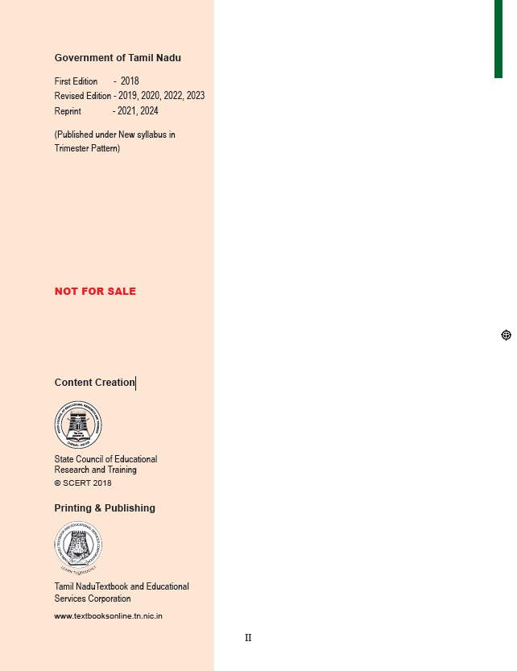
Mathematics is a unique symbolic language in which the whole world works and acts accordingly. This text book is an attempt to make learning of Mathematics easy for the students community.
Mathematics is not about numbers, equations, computations or algorithms; it is about understanding
— William Paul Thurston
CHAPTER |
TITLE |
MONTH |
CHAPTER 1 |
Numbers |
JUNE |
CHAPTER 1.1 |
Introduction |
JUNE |
CHAPTER 1.2 |
Formation of large numbers |
JUNE |
CHAPTER 1.3 |
Place Value Chart |
JUNE |
CHAPTER 1.4 |
Comparison of Numbers |
JUNE |
CHAPTER 1.5 |
Creating New Numbers |
JUNE |
CHAPTER 1.6 |
Use of Large Numbers in Daily Life Situations |
JUNE |
CHAPTER 1.7 |
Order of Operations |
JUNE |
CHAPTER 1.8 |
Estimation of numbers |
JUNE |
CHAPTER 1.9 |
Whole Numbers |
JUNE |
CHAPTER 1.10 |
Properties of Whole Numbers |
JUNE |
CHAPTER 2 |
INTRODUCTION TO ALGEBRA |
JULY |
CHAPTER 2.1 |
Introduction |
JULY |
CHAPTER 2.2 |
Patterns |
JULY |
CHAPTER 2.3 |
Understanding operations on Variables |
JULY |
CHAPTER 2.4 |
Framing Algebraic Statements |
JULY |
CHAPTER 2.5 |
Solving unknowns through examples |
JULY |
CHAPTER 3 |
RATIO AND PROPORTION |
JULY |
CHAPTER 3.1 |
Introduction |
JULY |
CHAPTER 3.2 |
Ratio |
JULY |
CHAPTER 3.3 |
Proportion |
JULY |
CHAPTER 3.4 |
Unitary Method |
JULY |
CHAPTER 4 |
GEOMETRY |
AUGUST |
CHAPTER 4.1 |
Introduction |
AUGUST |
CHAPTER 4.2 |
Describing lines |
AUGUST |
CHAPTER 4.3 |
Angles |
AUGUST |
CHAPTER 4.4 |
Points and lines |
AUGUST |
CHAPTER 5 |
STATISTICS |
AUGUST |
CHAPTER 5.1 |
Introduction |
AUGUST |
CHAPTER 5.2 |
Data |
AUGUST |
CHAPTER 5.3 |
Representation of data using Pictograph |
AUGUST |
CHAPTER 5.4 |
Representation of data using Bar Graph |
AUGUST |
CHAPTER 6 |
INFORMATION PROCESSING |
SEPTEMBER |
CHAPTER 6.1 |
Introduction |
SEPTEMBER |
CHAPTER 6.2 |
Systematic listing |
SEPTEMBER |
CHAPTER 6.3 |
Systematic completion of lists |
SEPTEMBER |
|
ANSWERS |
SEPTEMBER |
|
MATHEMATICAL TERMS |
SEPTEMBER |
Learning Objectives
Read the following conversation between two classmates.
Mani: (Reading Newspaper Headlines) “Ten thousand people visited the trade fair yesterday”.
Mallika: Wow! That's a lot of people.
Mani: Thank goodness, I went to the trade fair exactly yesterday!
Mallika: Why what is so important about it?
Mani: Don’t you see? If I had not gone, they would have written “Nine thousand nine hundred and ninety-nine people only visited the trade fair yesterday”. It would have been difficult to read and understand!
What do you think about this conversation? Was Mani right?
No! it would still be “Ten thousand people visited!”. Newspapers give (and readers want) a sense of the size, NOT exact values when numbers are large.
You have probably heard names like ‘lakhs’ and ‘crores’ used by elders.
We often come across situations that involve large numbers in real life, like the number of people living in a district, the budget of the Government, the distance of stars or the number of bicycles sold in a year and so on. In all these situations, we look for names that convey the “size” of these numbers.
MATHEMATICS ALIVE - LARGE NUMBERS IN REAL LIFE
Tamil Nadu has about 26,345 square kilometre of forest land.
The number of stars in the Milky way galaxy is about 20,000 crore
Let us understand the large numbers in detail, and the way they are connected to the numbers learnt earlier.
Recap of Successor and Predecessor
Now, we learn the formation of large numbers. Let us build and complete the number tower by observing the pattern of numbers
Greatest number |
Add |
Equals |
Smallest number |
Number Name |
Greatest 1 digit number 9 |
Add + 1 |
= |
Smallest 2 digit number 10 |
Number Name Ten |
Greatest 2 digit number 99 |
Add + 1 |
= |
Smallest 3 digit number 100 |
Number Name Hundred |
Greatest 3 digit number 999 |
Add + 1 |
= |
Smallest 4 digit number dash |
Number Name Thousand |
Greatest 4 digit number dash |
Add + 1 |
= |
Smallest 5 digit number 10000 |
Number Name Ten Thousand |
Greatest 5 digit number dash |
Add + 1 |
= |
Smallest 6 digit number dash |
Number Name Lakhs |
Greatest 6 digit number dash |
Add + 1 |
= |
Smallest 7 digit number dash |
Number Name Ten Lakhs |
Greatest 7 digit number 99,99,999 |
Add + 1 |
= |
Smallest 8 digit number 10000000 |
Number Name Crores |
We can observe that in every row the smallest number column has an additional zero compared to the previous row. You have read in lower classes about place value system. In this system (which was invented in India and spread to other countries!), the number 10 plays a very important role. It is shown in the following table.
1 × 10 |
= |
10 |
(Ten) |
10 × 10 |
= |
100 |
(Hundred) |
100 × 10 |
= |
1000 |
(Thousand) |
1000 × 10 |
= |
10000 |
(Ten Thousand) |
10000 × 10 |
= |
1,00000 |
(Lakhs) |
1,00000 × 10 |
= |
10,00000 |
(Ten Lakhs) |
10,00000 × 10 |
= |
1,0000000 |
(Crore) |
While each new row gives a number 10 times bigger, what happens if we skip and go 2 rows below. Numbers would be 100 times bigger.
For example, 1000 = 100 times 10, or thousand has “hundred tens” in it.
Box item begin
NOTE
As the numbers get large, it is difficult to keep track of the number of digits and the place value for each digit. Wherever possible, we use names like lakh and crore instead of writing so many zeros. However, we can write exact values of large numbers too, if needed.
Box item end
TRY THESE
1. Give 3 examples where the number of things counted by you would be a 5 digit number or more.
2. There are ten lakh people in a district. What would be the population of 10 such districts?
3. The Government spends rupees 2 crores for education in a particular district every month. What would be its expenditure over 10 months?
Periods |
Crores |
|
Lakhs |
|
Thousands |
|
|
|
Ones |
Place Value |
T C Ten Crores |
C Crores |
T L Ten Lakhs |
L Lakhs |
T T H Ten Thousands |
T H Thousands |
H Hundreds |
T Tens |
O ones |
When we write large numbers we make use of place value chart to ensure that we do not miss any digit in between, while writing it. In a given number, starting from the right, the first three places make the ones period, the next two places make the thousands period, the next two places make the lakhs period and the next places make the crores period.
Try to read the number 359468421. Is it difficult? Yes. It is not easy. But by using the indicators or the periods, it is easy to read and write 359468421 as under.
Periods |
Crores |
|
Lakhs |
|
Thousands |
|
Ones |
|
|
Place Value Number |
3 Ten Crores |
5 Crores |
9 Ten Lakhs |
4 Lakh |
6 Ten Thousands |
8 Thousand
|
4 Hundreds |
2 Tens |
1 one |
Number Name |
35 Crores |
|
94 Lakhs |
|
68 Thousands |
|
421 Ones |
|
|
Thirty five crore Ninety four lakh sixty eight thousand four hundred twenty one
Use of comma
In any given number, we separate the periods by using commas. In our Indian System of Numeration, we use commas from the right. The first comma comes before Hundreds place (3 digits from the right). The second comma comes before Ten Thousands place (5 digits from the right). The third comma comes before Ten Lakhs place (7 digits from the right) and the digits next to it represents crore.
Example 1. 1
The distance between the Sun and the Earth is about 9 crores 29 lakhs miles. Read and write the number in the Indian method.
Solution
Periods |
Crores |
Lakhs |
|
Thousands |
|
Ones |
|
|
Place Value |
9 Crores |
2 Ten Lakhs |
9 Lakhs |
0 Ten Thousand |
zero thousand |
0 Hundred |
0 Tens |
0 ones |
Using Commas |
9,29,00,000 |
|
|
|
|
|
|
|
Number Name |
Nine crores twenty nine lakhs. |
|
|
|
|
|
|
|
TRY THESE
Complete the table
Place value number |
Ten Crores |
Crores |
Ten Lakhs |
Lakhs |
Ten Thousands |
Thousands |
Hundreds |
Tens |
One |
Number name |
1670 |
|
|
|
|
|
|
|
|
|
|
47684 |
|
|
|
|
|
|
|
|
|
|
1 lakh 20 thousand one |
|
|
|
|
|
|
|
|
|
|
78 lakhs 500 |
|
|
Place value Ten Lakhs number 7 |
Place value Lakhs number 8 |
Place value Ten Thousands number 0 |
Place value thousands number 0 |
Place value Hundreds number 5 |
Place value Tens number 0 |
Place value Ones number 0 |
Seventy eight lakhs five hundred |
5 crores 34 lakhs 9 thousands 98 |
|
|
|
|
|
|
|
|
|
|
19 crore 87 lakhs 65 thousands 912 |
|
|
|
|
|
|
|
|
|
|
Note: When we write numbers, the place value increases from right to left.
This system is followed by many countries in the world.
Periods |
Billions |
|
|
Millions |
|
|
Place Value |
H B Hundred Billions |
TB Ten Billions |
B Billions |
H M Hundred Millions |
T M Ten Millions |
M Millions |
Thousands |
|
|
Ones |
|
|
H T Hundred thousands |
T T h Ten Thousands |
T h Thousands |
H Hundreds |
T Tens |
O Ones |
In a given number, starting from the right, the first three places make the ones period, the next three places make the thousands period, the next three places make the million period and the next three places make the billion period Exceedra.
Read and write 35694568421 in the international method
Periods |
Billions |
|
|
Millions |
|
|
Place Value Number |
Place Value Hundred Billions |
Place Value Ten Billions Number 3 |
Place Value Billions Number 5 |
Place Value Hundred Millions Number 6 |
Place Value Ten Millions Number 9 |
Place Value Millions Number 4 |
Number Name |
35 Billions |
|
|
694 Millions |
|
|
|
Thirty five billion |
|
|
six hundred ninety four million |
|
|
Thousands |
|
|
Ones |
|
|
Place Value Hundred thousands Number 5 |
Place Value Ten Thousands Number 6 |
Place Value Thousands Number 8 |
Place Value Hundreds Number 4 |
Place Value Tens Number 2 |
Place Value Ones Number 1 |
568 Thousands |
|
|
421 Ones |
|
|
five hundred sixty eight thousand |
|
|
four hundred twenty one |
|
|
Thirty five billion six hundred ninety four million five hundred sixty eight thousand four hundred twenty one.
Use of commas
In the International System of Numeration, we use Ones, Tens, Hundreds, Thousands, Ten Thousands, Hundred Thousands, Million, Ten Million, Hundred Million and Billion, Ten Billion, Hundred Billion. Commas are used to mark Thousands, Millions and Billions.
Example 1.2
The distance between the Sun and the Earth is about 92lakh 90 thousands miles. Read and write the number in the International Method.
Solution
Periods |
Billions |
|
|
Millions |
|
|
Place Value |
Place Value H B |
Place Value T B Number
|
B Number |
Place Value H M |
Place Value T M Number 9 |
Place Value M Number 2 |
Using Commas |
92,900,000 |
|
|
|
|
|
Number Name |
Ninety two million nine hundred thousand. |
|
|
|
|
|
Thousands |
|
|
Ones |
|
|
Place Value H T Number 9 |
Place Value T T h Number 0 |
Place Value T h Number 0 |
Place Value H Number 0 |
Place Value T Number 0 |
Place Value O Number 0 |
We can easily understand both the Indian and the International Number Systems from the following table
Indian number system
Period |
Name |
Numeral |
Period Ones |
Name One |
Numeral 1 |
Period Ones |
Name Ten |
Numeral 10 |
Period Ones |
Name Hundred |
Numeral 100 |
Period Thousands |
Name Thousand |
Numeral 1,000 |
Period Thousands |
Name |
Numeral 10,000 |
Period Lakhs |
Name Lakh |
Numeral 1,00000 |
Period Lakhs |
Name Ten Lakh |
Numeral 10,00000 |
Period Crores |
Name Crore |
Numeral 1,0000000 |
Period Crores |
Name Ten crore |
Numeral 10,0000000 |
Period Crores |
Name Hundred crore |
Numeral 100,0000000 |
Period Crores |
Name Thousand crore |
Numeral 1000,0000000 |
International number system
Name |
Numeral |
Period |
Name One |
Numeral 1 |
Period Ones |
Name Ten |
Numeral 10 |
Period Ones |
Name Hundred |
Numeral 100 |
Period Ones |
Name Thousand |
Numeral 1,000 |
Period Thousands |
Name Ten thousand |
Numeral 10,000 |
Period Thousands |
Name Hundred thousand |
Numeral 100,000 |
Period Thousands |
Name Million |
Numeral 1,000,000 |
Period Millions |
Name Ten Million |
Numeral 10,000,000 |
Period Millions |
Name Hundred Million |
Numeral 100,000,000 |
Period Millions |
Name Billion |
Numeral 1,000,000,000 |
Period Billions |
Name Ten Billion |
Numeral 10,000,000,00 |
Period Billions |
With the help of the above table, we can read the number 57340000 as 5,73,40,000 (Five Crore Seventy Three Lakh Forty Thousand) in the Indian System and as 57 million 340 thousand (Fifty Seven Million Three Hundred Forty Thousand) in the International System.
TRY THESE
Identify the incorrectly placed comma and rewrite correctly.
Indian System
1. 56, 12, 34, 0 , 1 , 5
2. 9, 90, 03, 2245
International System
1. 7, 5613, 4534
2. 30, 30, 304, 040
ACTIVITY
Take a white chart and cut into 9 equal pieces. Write different numbers on each piece. Arrange the pieces, as many times, horizontally which form different numbers. Write any five different numbers and express them in the Indian and the International System.
Every digit of a number has a place value which gives the value of the digit.
Write the number 6 lakhs 76,097 in expanded form:
Number: 6lakhs 76 thousands 97
Expanded form:
6 lakhs + 7 ten thousands + 6 thousands + 0 hundreds + 9 tens + 7 ones
6 × 1 lakh + 7 × 10,000 + 6 × 1000 + 0 × 100 + 9 × 10 + 7 × 1
6 lakhs + 70,000 + 6000 + 90 + 7
Finding the place value of all the digits in 98 lakhs 47 thousand 56
The Place value of 6 is = 6 Ones = 6 × 1 = 6
The Place value of 5 is = 5 Tens = 5 × 10 = 50
The Place value of 0 is = 0 Hundreds = 0 × 100 = 0
The Place value of 7 is = 7 Thousands = 7 × 1000 = 7,000
The Place value of 4 is = 4 Ten Thousands = 4 × 10000 = 40,000
The Place value of 8 is = 8 Lakhs = 8 × 1lakh = 8lakhs
The Place value of 9 is = 9 Ten Lakhs = 9 × 1000000 = 90 lakhs
Hence, the number 98 lakhs 47 thousands 56 is read as Ninety Eight Lakh Forty Seven Thousand Fifty Six.
TRY THESE
1. Expand the following numbers
1. 23 lakh 4 thousand 567
2. 45 lakh 9 thousand 888
3. 95 lakh 53 thousand 556
2. Find the place value of underlined digits.
1. 3 under line 8 4 1 5 6 7
2. 9 4 under line 4 3 8 1 0
3. Write down the numerals and place value of 5 in the numbers represented by the following number names.
1. Forty Seven Lakh Thirty Eight Thousand Five Hundred Sixty One.
2. Nine Crore Eighty Two Lakh Fifty Thousand Two Hundred Forty One.
3. Nineteen Crore Fifty Seven Lakh Sixty Thousand Three Hundred Seventy.
Example 1. 3
How many thousands are there in 1 lakh?
Solution
Place Value 1 lakh |
Place Value 1 Lakhs |
Place Value 0 Ten Thousands
|
Place Value 0 Thousand hundreds
|
Place Value 0 Hundreds
|
Place Value 0 Tens
|
Place Value 0 Ones
|
|
Place Value 1 thousand |
|
|
Thousand hundreds 1 |
zero Hundreds |
0 Tens |
0 One
|
1 lakh divided by 1 thousand equal to 100 |
Lakh is 2 places to the left of thousand. So, it is 10 × 10 = 100 times thousand
Hence, 1 lakh = 100 thousands
Example 1.4
How many thousands are there in 1 million?
Solution
Place Value 1 million |
Place Value 1 million |
Place Value 0 Hundred Thousand |
Place Value zero Ten thousand |
Place Value zero Thousand |
Place Value 0 Hundred |
Place Value 0 Ten |
Place Value 0 one |
|
Place Value 1 thousand |
|
|
|
1 Thousand |
zero Hundred |
0 Ten |
0 one |
1 million divided by 1 thousand equal 1lakh divided by 1000 is equal to 1000
|
Million is 3 places to the left of Thousand.
1000 Thousands (1000 multiplied by 1000 = 1,000,000) are in a million.
TRY THESE
1 How many hundreds are there in 10 lakh?
2 How many lakhs are there in a million?
3 10 lakh candidates write the Public Exam this year. If each exam centre is allotted with 1000 candidates. How many exam centres would be needed?
Exercise 1.1
1. Fill in the blanks.
1. The smallest 7 digit number is dash.
2. The largest 8 digit number is dash.
3. The place value of 5 in 7 lakhs 5,380 is dash.
4. The expanded form of the number 76 lakhs 70,905 is dash.
2. Say True or False.
1. Successor of a one digit number is always a one digit number
2. Predecessor of a 3-digit number is always a 3 or 4-digit number
3. In the Indian System of Numeration the number 67999037 is written as 6 crores 79 lakhs 99,037.
4. 88,888 = 8 × 10000 + 8 × 100 + 8 × 10 + 8 × 1
3. How many ten thousands are there in the smallest 6 digit number?
4. Observe the commas and write down the place value of 7.
1. 56,74,56,345
2. 567,456,345
5. Write the following numbers in the International System by using commas.
1. 347056
2. 7345671
3. 634567105
4. 1234567890
6. Write the largest six digit number and put commas in the Indian and the International Systems.
7. Write the number names of the following numerals in the Indian System.
1. 75 lakhs 32,105
2. 9 crores 75 lakhs 63 thousand 453
8. Write the number names in words using the International System.
1. 3 lakhs 45 thousand 678
2. 83 lakhs 43 thousand 710
3. 10 crores 34 lakhs 56 thousand 789
9. Write the number name in numerals.
1. Two crore thirty lakh fifty one thousand nine hundred eighty.
2. Sixty six million three hundred forty five thousand twenty seven.
3. Seven hundred eighty nine million two hundred thirteen thousand four hundred fifty six.
10. Tamil Nadu has about twenty six thousand three hundred forty five square kilometre of Forest land. Write the number mentioned in the statement in Indian System and International System.
11. The number of employees in the Indian Railways is about ten lakhs. Write this in the International System of numeration.
Objective Type Questions
12. The successor of 10 million is
(a) 10 lakhs1
(b) 10 million1
(c) 99 lakhs 99 thousand 999
(d) 1lakh 1
13. The difference between the successor and the predecessor of 99999 is
(a) 90000
(b) 1
(c) 2
(d) 99001
14. 1 billion is equal to
(a) 100 crore
(b) 100 million
(c) 100 lakh
(d) 10000 lakh
15. The expanded form of the number 6 lakhs 70,905 is
(a) 6 × 10000 + 7 × 1000 + 9 × 100 + 5 × 1
(b) 6 × 10000 + 7 × 1000 + 0 × 100 + 9 × 100 + 0 × 10 + 5 × 1
(c) 6 × 10 lakhs + 7 × 10000 + 0 × 1000 + 9 × 100 + 0 × 10 + 5 × 1
(d) 6 × 1lakh + 7 × 10000 + 0 × 1000 + 9 × 100 + 0 × 10 + 5 × 1
We are familiar with the concept of comparing numbers and finding the biggest among them. We use symbols less than, greater than and equal to compare any two numbers.
1. When we compare the numbers 16090 and 1lakh 616, we have already learnt that the number with more digits is greater.
Hence, 1 lakh 616 (6 digit number) greater than 16,090 (5 digit number).
2. Suppose we are given more than two numbers say 1468, 5, 201, 69 and 70000. Then among these, we can immediately say that the number 70000 is the greatest and 5 is the least, based on the number of digits.
Box item begin
TRY THESE
1. Write the numbers in the ascending order
688,
9,
23005,
50,
7500
2. Find the least and the greatest among the numbers
478,
98,
6348,
3,
6007,
50935
Box item end.
Think about the situation
In a distance analysis chart, the distance between Chennai and New Delhi is 2180 kilo meters. and Chennai to Noida is 2158 kilo meters. respectively. Which city is farther from Chennai?
Step 1 Compare the thousands place of two numbers 2 1 8 0 2 1 5 8 Here digit at the thousands place of both numbers are the same. We can’t arrive at any conclusion. So, we move on to the next step. |
Step 2 Compare the hundreds place of two numbers 2 1 8 0 2 1 5 8 Here digit at the hundreds place of both numbers are the same. We can’t arrive at any conclusion. So, we move on to the next step. |
Step 3 Compare the tens place of two numbers 2 1 8 0 2 1 5 8 Here digit at the tens place of both numbers are different, So, the number with the greatest tenth place will be the greater. Therefore, 2180 greater than 2158 |
Think Why we need not compare the one’s place? |
Compare the given numbers 2180 and 2158 using the above mentioned steps.
2=2 |
1=1 |
8 greater than 5 |
Hence, 2180 greater than 2158. So, New Delhi is farther from Chennai
Example 1.5
Compare 5 crore 92 lakh 83 thousand 746 and 5 crore 92 lakh 83 thousand 748 using place value chart.
Solution
Step 1: Number of digits in the two given numbers are equal.
Step 2: Compare the place values using the place value chart.
Place Value First Number |
Place Value Crores First Number 5 |
Place Value Ten Lakhs First Number 9 |
Place Value Lakhs First Number 2 |
Place Value Ten Thousands First Number 8 |
Place Value thousands First Number 3 |
Place Value hundreds First Number 7 |
Place Value Tens First Number 4 |
Place Value ones First Number 6 |
Place Value Second Number |
Place Value Crores Second Number 5 |
Place Value Ten Lakhs Second Number 9 |
Place Value Lakhs Second Number 2 |
Place Value Ten Thousands Second Number 8 |
Place Value Thousands Second Number 3 |
Place Value Hundreds Second Number 7 |
Place Value Tens Second Number 4 |
Place Value Ones Second Number 8 |
Compare the digits of the two numbers from the highest place value as noted below.
5=5 |
9=9 |
2=2 |
8=8 |
3=3 |
7=7 |
4=4 |
6 less than 8 |
Here only the digits in the ones place are not equal and 6 less than 8.
Hence, 5 crore 92 lakh 83,746 less than 5 crore 92 lakh 83,748
TRY THESE
Compare the two numbers and put less than , greater than and equal using place value chart.
15,475 |
3,214 |
73,204 |
9 lakhs 73,561 |
89 lakhs 75,430 |
89 lakhs 75,430 |
18 lakhs 99,799 |
18 lakhs 99,799 |
The heights of five different apartments named as A, B, C, D and E in a locality are 985 feet, 1245 feet, 1865 feet, 355 feet and 585 feet respectively. They are shown according to their heights as shown in Figure 1.1.
Can you arrange them in the ascending order of their heights?
Yes, We can arrange the numbers by comparing them based on the place values.
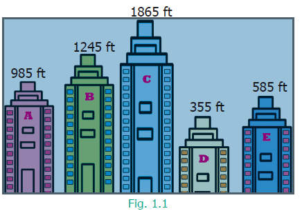
Step 1
Compare the 4 digit numbers 1245 and 1865. By following the steps mentioned for comparing the numbers having same number of digits, we get 1865 greater than 1245.
The tallest apartment is ‘C’ (1865 feet).
The next tallest apartment is ‘B’ (1245 feet).
Apartments A |
|
Place value Hundreds 9 |
Place value Tens 8 |
Place value Ones 5 |
Apartments B |
Place value Thousands1 |
Place value Hundreds 2 |
Place value Tens 4 |
Place value Ones 5 |
Apartments C |
Place value Thousands1 |
Place value Hundreds 8 |
Place value Tens 6 |
Place value Ones 5 |
Apartments D |
|
Place value Hundreds 3 |
Place value Tens 5 |
Place value Ones 5 |
Apartments E |
|
Place value Hundreds 5 |
Place value Tens 8 |
Place value Ones 5 |
Step 2
Compare the three digit numbers 985, 585 and 355. Using the above table, we get,
985 greater than 585 greater than 355. The smallest among them is 355.
Hence we write the heights of the apartments in ascending order as,
Apartments D 355 lesser than Apartments E 585 lesser than Apartments A 985 lesser than Apartments B 1245 lesser than Apartments C 1865
TRY THESE
The area in square kilo meter of four Indian states are given below
States |
Area (square kilo meter) |
Tamil Nadu |
1 lakh 30,058 |
Kerala |
38,863 |
Karnataka |
1 lakh 91,791 |
Andhra Pradesh |
1 lakh 62,968 |
List the areas of the above four Indian States in the ascending and the descending order.
Box item begin
DO YOU KNOW
Thomas Harriot
(1560 to 1621)
A famous mathematician, was the first to use < less than and > greater than symbols.
Box item end.
Using the four digits 9, 4, 8 and 5 we need to make different 4-digit numbers in such a way that the digits are not repeated. We get the following arrangement of different 4-digit numbers
Thousands 9 |
Hundreds 4 |
Tens 8 |
Ones 5 |
Thousands 9 |
Hundreds 4 |
Tens 5 |
Ones 8 |
Thousands 9 |
Hundreds 8 |
Tens 4 |
Ones 5 |
Thousands 9 |
Hundreds 8 |
Tens 5 |
Ones 4 |
Thousands 9 |
Hundreds 5 |
Tens 4 |
Ones 8 |
Thousands 9 |
Hundreds 5 |
Tens 8 |
Ones 4 |
Box item begin
TRY THESE
In the same way, try placing the digit 4 in thousands place and get six different 4-digit numbers. Also make different 4-digit numbers by fixing 8 and 5 in the thousands place.
ACTIVITY
Divide a chart paper into eight equal parts. Write different 1-digit numbers on it. List out the possible 8 digit numbers and also find the largest and the smallest numbers among them.
Box item end.
Impact of Place Value
Consider the 4-digit number 3795. When we exchange the digits of two places, the number either becomes larger or smaller. For example, the given number is 3795. If the digits 9 and 5 are exchanged, then the number is 3759. This number is less than the given number. It makes a great impact in the situations like handling currencies.
Box item begin
TRY THESE
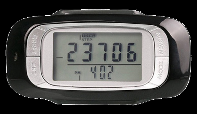
Box item end.
Exercise 1.2
1. Fill in the blanks with greater than or less than or equal.
1. 48792 Dash 48972
2. 12 lakhs 48 thousand 654 Dash 12 lakhs 46 thousand 854
3. 6 lakhs 58 thousand 794 Dash 6 lakhs 58 thousand 794
2. Say True or False.
1. The difference between the smallest number of seven digits and the largest number of six digits is 10.
2. The largest 4-digit number formed by the digits 8, 6, 0, 9 using each digit only once is 9,086.
3. The total number of 4 digit numbers is 9,000.
3. Of the numbers 138 crores 67 lakhs 87 thousand 215 ,137 crores 69 lakhs 8890, 8 crores 67 lakhs 20 thousand 560, which one is the largest? Which one is the smallest?
4. Arrange the following numbers in the descending order:
1 lakh 28 thousand 435, 10,835, 21,354, 6,348, 25,840
5. Write any eight digit number with 6 in ten lakhs place and 9 in ten thousandth place.
6. Rajan writes a 3-digit number, using the digits 4, 7 and 9. What are the possible numbers he can write?
7. The password to access my A T M card includes the digits 9,4,6 and 8. It is the smallest 4 digit even number. Find the password of my A T M Card.
8. Postal Index Number consists of six digits. The first three digits are 6, 3, and 1. Make the largest and the smallest Postal Index Number by using the digits 0,3 and 6, each only once.
9. The heights (in metres) of the mountains in Tamil Nadu are as follows
Serial Number |
Mountains |
Height (in metres) |
Serial Number 1 |
Mountains Doddabetta |
2637 metres |
Serial Number 2 |
Mountains Mahendragiri |
1647 metres |
Serial Number 3 |
Mountains Aanaimudi |
2695 metres |
Serial Number 4 |
Mountains Velliangiri |
1778 metres |
1. Which is the highest mountain listed above?
2. Order the mountains from the highest to the lowest.
3. What is the difference between the heights of the mountains Aanaimudi and Mahendragiri?
Objective Type Questions
10. Which list of numbers is in order from the smallest to the largest?
(a) one thousand sixty eight, one thousand eighty six , one thousand eighty four
(b) 2345, 2435, 2235
(c) 1lakh 34 thousand 205, 1 lakh 34 thousands 208, 1 lakh 54 thousands 203
(d) 3 lakhs 83 thousands 553, 3 lakhs 83 thousands 548, 3 lakhs 83 thousands 642
11. The Arabian Sea has an area of 14 lakhs 91,000 square miles. This area lies between which two numbers?
(a) 14 lakhs 89,000 and 14 lakhs 92,540
(b) 14 lakhs 89,000 and 14 lakhs 90,540
(c) 14 lakhs 90,000 and 14 lakhs 90,100
(d) 14 lakhs 80,000 and 14 lakhs 90,000
12. The chart below shows the number of newspapers sold as per Indian Readership Survey in 2018. Which could be the missing number in the table?
Name of the Newspaper |
Ranking |
Sold (in Lakh) |
Name of the Newspaper A |
Ranking 1 |
Sold 70 |
Name of the Newspaper B |
Ranking 2 |
Sold 50 |
Name of the Newspaper C |
Ranking 3 |
Sold? |
Name of the Newspaper D |
Ranking 4 |
Sold 10 |
(a) 8
(b) 52
(c) 77
(d) 26
We know to apply four basic operations on numbers. We will see a few more examples which deal with the four operations such as addition, subtraction, multiplication and division.
Example 1.6
In an exhibition, the number of tickets sold on the first, second, third and fourth days are 1 lakh 10,000, 75,060, 25,700 and 30,606 respectively. Find the total number of tickets sold on all the 4 days.
Solution
Number of tickets sold on the first day = 1 lakh 10,000
Number of tickets sold on the second day = 75,060
Number of tickets sold on the third day = 25,700
Number of tickets sold on the fourth day = 30,606
Adding all the above, the total number of tickets sold on all the 4 days = 2 lakhs 41,366
Example 1.7
In a year, a whole-sale paper firm sold 6 lakhs 25,600 notebooks out of 7 lakhs 50,000 notebooks. Find the number of notebooks left unsold.
Solution
Number of notebooks in the store = 7 lakhs 50,000
Number of notebooks sold = 6 lakhs 25,600
Number of notebooks unsold = 1 lakhs 24,400
Example 1.8
In a mobile store, the number of mobiles sold during a month is 1250. Assuming that the same number of mobiles are sold every month, find the number of mobiles sold in 2 years.
Solution
Number of mobiles sold in 1 month equal 1250
1 year equal 12 months
2 years equal 2 in to 12
Is equal to 24 months
Number of mobiles sold in 24 months equal 1250 in to 24 equal 30,000
Number of mobiles sold in 2 years equal 30,000
Example 1.9
If Rupees 10 lakhs was distributed in a government scheme to 500 women in the Self-Help Groups, then find the amount given to each woman.
Solution
Amount to be given to 500 women Is equal to Rupees 10 lakhs
Amount given to each woman Is equal to 10 lakhs ÷ 500 Is equal to rupees 2000
Each woman in the Self-Help Group was given rupees 2000.
Think about the situation
Valli and her four friends went to a butter milk shop. Each had a cup of butter milk and paid rupees 30, assuming that the cost of one cup of butter milk to be rupees 6. But the shop keeper told that the cost of butter milk had increased by rupees 2. Then, Valli decided to give rupees 2 more and paid rupees 32. But the shop keeper claimed that she had to pay rupees 40. Who is correct?
Valli calculated as, Is equal to (5 into 6) plus 2 Is equal to 30 plus 2 Is equal to 32 |
Shop keeper calculated as, Is equal to 5 into (6 plus 2) Is equal to 5 into 8 Is equal to 40 |
The amount rupees 40 claimed by the Shop keeper is correct. This confusion can be avoided by using the brackets in the correct places like 5 into (6 plus 2).
The rule of order of operations is called as B I D M A S. In B I D M A S the operations done from left to right.
Expansion of B I D M A S |
|
B |
Bracket ( ) |
I |
Indices (you will learn it later) |
D |
Division ÷ or / |
M |
Multiplication × |
A |
Addition + |
S |
Subtraction − |
Now, we try to solve 9 plus 5 into 2 by using B I D M A S,
9 plus (5 into 2) Is equal to 9 plus 10
Is equal to 19
Example 1.10
Simplify: 24 plus 2 into 8 divided by 2 minus 1
Solution
24 plus 2 into 8 divided by 2 minus 1 (given question)
Is equal to 24 plus 2 into 4 minus 1 (divided by operation, completed first)
Is equal to 24 plus 8 minus 1 (into operation, completed second)
Is equal to 32 minus 1 (plus operation, completed third)
Is equal to 31 (minus operation, completed last)
Example 1.11
Simplify: 20 plus [8 into 2 plus {(6 into 3) minus (10 divided 5)}]
Solution
Given,
20 + whole bracket[8 into 2 + {(6 into 3) minus (10 ÷ 5)}]
= 20 + whole bracket 8 into 2 + {(6 into 3) minus 2}] (divided by completed first)
= 20 + whole bracket 8 into 2 + {18 minus 2}] (into completed second)
= 20 + whole bracket 8 into 2 +16] ({ } completed third)
= 20 + [16 + 16] (into completed fourth)
= 20 + 32 ([ ] whole bracket operation completed fifth)
= 52 (+ completed last)
Exercise 1.3
1. Fill in the blanks.
1. If Arulmozhi saves rupees 12 per day, then she saves rupees dash in 30 days.
2. If a person ‘A’ earns rupees 1800 in 12 days, then he earns rupees dash in a day.
3. 45 divided (7 plus 8) minus 2 is equal to dash.
2. Say True or False.
1. 3 plus 9 into 8 is equal to 96
2. 7 into 20 minus 4 is equal to 136
3. 40 plus (56 minus 6) divided by 2 is equal to 45
3. The number of people who visited the Public Library for the past 5 months were 1200, 2000, 2450, 3060 and 3200 respectively. How many people visited the library in the last 5 months.
4. Cheran had a bank savings of rupees 7 lakhs 50,250. He withdrew rupees 5 lakhs 34 thousand 500 for educational purpose. Find the balance amount in his account.
5. In a cycle factory, one thousand five hundred and sixty bicycles were manufactured every day. Find the number of bicycles manufactured in 25 days.
6. rupees 62,500 was equally distributed as a New Year bonus for 25 employees of a company. How much did each receive?
7. Simplify the following numerical expressions:
1. (10 plus 17) divided by 3
2. 12 minus [3 minus {6 minus (5 minus 1)}]
3. 100 plus 8 divided by 2 plus {(3 into 2) minus 6 divided by 2}
Objective Type Questions
8. The value of 3 plus 5 minus 7 into 1 is dash.
(a) 5
(b) 7
(c) 8
(d) 1
9. The value of 24 divided by {8 minus (3 into 2)} is dash
(a) 0
(b) 12
(c) 3
(d) 4
10. Use BIDMAS and put the correct operator in the box.
2 box 6 minus 12 divided by (4 plus 2) is equal to 10
(a) plus
(b) minus
(c) multiplication
(d) division
Let us see few examples now,
(9) Nearly 60,000 people watched the Republic Day parade at Rajpath, New Delhi.
(10) About 2,80,000 people of various countries died due to earthquake and Tsunami on 26th December 2004 in the Indian ocean.
(11) The India-Pakistan cricket match was viewed by about 30 million cricket fans in the Television all over the world.
We often come across statements like these in TV channels and dailies. Do these news items, give the exact numbers? No. The numbers mentioned are not accurate. They are only the approximate or closer values to the actual ones. This is the reason, why we generally use words like “about”, “nearly” and “approximately”. These numbers are only the estimation of the actual value. The word ‘about’ denotes the number not exactly, but a little more or less. This value is called the estimated value.
The actual figure, though not exactly possible, could have been 59,853 or 61,142 for the first example and it could have been 2lakhs 78,955 or 2lakhs 80,984 for the second example. Imagine and write about, what could have been the exact number for the third example given above? Similarly, there are many more possible numbers. Thus,
Some real life situations where we use estimates are
(a) Cost of a Television, Refrigerator, Mixer Grinder Exceedra are usually expressed in thousands of rupees.
(b) The Voters population in an Assembly Constituency in a state is often stated in lakhs.
(c) The Central or State Government’s Annual Budget is usually given in lakh crore.
When an exact answer is not necessary, estimation strategies can be used to determine a reasonably close answer.
ACTIVITY
1. Fill in the jar with some items like Tamarind seeds. Let each student give an estimate of the number of items. Make a table of the result by finding the difference of the estimate and the actual amount.
2. Get a large jar and a bag of Tamarind seeds and put 30 seeds in the jar. Observing the contents, estimate how many seeds roughly will fill the whole jar. Continue to fill the jar to check your estimate.
Rounding off is one way to find a number for estimation that is quite convenient. It gives us the closest suitable number according to a given place value. There are four steps involved in the rounding process. Let us illustrate this with an example.
Example 1.12
Round off the number 8,436 to the nearest hundreds.
Step |
To do |
8,436 to hundreds |
Step 1 |
Find the digit in hundreds place |
8,436 |
Step 2 |
Look at the digit to its right |
8,436 |
Step 3 |
If this digit is 5 or greater, add 1 to it. If it is less than 5, leave it unchanged |
8,436 (3 less than 5) Leave 4 unchanged |
Step 4 |
Change the digits to the right of 4 to zeros |
8,400 |
Example 1. 13
Round off the number 78,794 to the nearest thousands.
Step |
To do |
78,794 to thousands |
Step 1 |
Find the digit in thousands place |
78,794 |
Step 2 |
Look at the digit to its right |
78,794 |
Step 3 |
If this digit is 5 or greater, add 1 to it. If it is less than 5, leave it unchanged |
78,794 (7 greater than 5) Add 1 to 8 and Change 8 to 99 |
Step 4 |
Change the digits to the right of 79 to zeros |
79,000 |
TRY THESE
1. 57
2. 189
3. 3,956
4. 57,312
2.Round off the following numbers to the nearest ten, hundred and thousand.
1. 9 lakhs 34 thousand 678
2. 73 lakhs 43 thousand 489
3. 17 crore 98 lakhs 45 thousand 673
3.The tallest mountain in the world Mount Everest, located in Nepal is 8,848 meter high. Its height can be rounded to the nearest thousand as dash.
1 point 8 point1 Estimation of Sum and Difference
Example 1.14
The amount deposited by a gold merchant in his bank account in the month of January is rupees 17 lakhs 53 thousand 740 and in the month of February is rupees 15 lakhs 34 thousand 300. Estimate the sum and difference of the amount deposited to the nearest thousand.
Solution
Rounding off to the nearest thousand is as follows.
Details |
Actual Amount |
Estimated Amount |
Amount deposited in January |
Actual Amount rupees 17 lakhs 53,740 |
Estimated Amount rupees 17 lakhs 54,000 |
Amount deposited in February |
Actual Amount rupees 15 lakhs 34,300 |
Estimated Amount rupees 15 lakhs 34,000 |
Total amount deposited |
Actual Amount rupees 32 lakhs 88,040 |
Estimated Amount rupees 32 lakhs 88,000 |
Difference between the amounts deposited |
Actual Amount rupees 2 lakhs 19,440 |
Estimated Amount rupees 2 lakhs 20,000 |
Box item begin
THINK
Is 2 lakhs 19,440 is rounded off to its nearest thousand as 2 lakhs 19,000 Why?
Do you know?
The number 10 power 100 is called googol (this is, 10 multiplied 100 times)
The number 10 googol = 10 into 10 to the power 100 is called googolplex
Box item end.
Example 1.15
If the cost of a copy of Thirukkural book is rupees 188, then find the estimated cost of 31 copies of such books. (Note: Find the rounded values of 188 to hundreds and 31 to tens and then find the result)
Solution
Here, 188 is nearer to 200 and 31 is nearer to 30.
The exact cost of 31 copies is 188 × 31 = rupees 5828 whereas,
The estimated cost of 31 copies = 200 × 30 = rupees 6000
Therefore, the estimated cost of 31 copies of Thirukkural books is rupees 6000.
Example 1.16
Find the estimated value of 5598 ÷ 689.
Solution
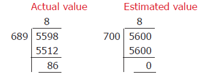
Actual value 5598 is divided by 689
8 multiplied by 689 we get subtract 5512
Then we this number 86 quotient 8
Estimate value 5600 is divided by 700
8 multiplied by 700 we get subtract 5600
Then we this number 0 quotient 8
Hence, the estimated value of 5598 ÷ 689 is 8
Round of the numbers 5598 and 689 to the nearest hundreds are 5600 and 700
Box item begin
TRY THESE
Box item end.
Exercise 1.4
1. Fill in the blanks.
1. The nearest 100 of 843 is dash.
2. The nearest 1000 of 756 is dash.
3.The nearest 10000 of 85654 is dash.
2. Say True or False.
1. 8567 is rounded off as 8600 to the nearest 10.
2. 139 is rounded off as 100 to the nearest 100.
3. 1 crore 70 lakhs 51,972 is rounded off as 1 crore 70 lakhs to the nearest lakh.
3. Round off the following to the given nearest place.
1. 4,065; hundred
2. 44,555; thousand
3. 86,943; ten thousand
4. 50 lakhs 81 thousand 739; lakh
5. 33 crore 75 lakh 98,482; ten crores
4. Estimate the sum of 1 lakhs 57,826 and 32469 rounded off to the nearest ten thousand.
5. Estimate by rounding off each number to the nearest hundred.
1. 8074 + 4178
2. 1 crore 76 lakhs 8977 + 1 lakh 30 thousand 589
6. The population of a city was 43 lakhs 43 thousand 645 in the year 2001 and 46 lakhs 81,087 in the year 2011. Estimate the increase in population by rounding off to the nearest thousand.
Objective Type Questions
7. The number which on rounding off to the nearest thousand gives 11000 is
(a) 10345
(b) 10855
(c) 11799
(d) 10056
8. The estimation to the nearest hundred of 76812 is
(a) 77,000
(b) 76,000
(c) 76,800
(d) 76,900
9. The number 97,85,764 is rounded off to the nearest lakh as
(a) 98lakhs
(b) 97 lakhs 86000
(c) 97 lakhs 95,600
(d) 97 lakhs 95000
10. The estimated difference of 16,7826 and 2,765 rounded off to the nearest thousand is
(a) 1 lakhs 80000
(b) 1 lakhs 65000
(c) 1 lakhs 40000
(d) 1 lakhs 55,000
What is Mathematics about? It is about numbers, perhaps about shapes as well. It is true that people usually count 1,2,3 Exceedra on various situations. This collection of counting numbers {1,2,3, Exceedra } is called Natural numbers, denoted by N. If this collection includes 0 as well, then the collection {0,1,2,3, Exceedra } is called Whole numbers, denoted by W.
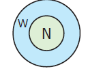
Logical and Mathematical operations of numbers are used in everyday arithmetic of numbers. These operations can be made easier using properties. Certain properties of numbers are already used without actually knowing them. For example, while adding 8 + 2 + 7, one way of adding is, 8 and 2 are added first to get 10 and then 7 is added to it. The other way of adding this is, 2 and 7 added first to get 9 of then 8 is added to 9 to get 17 which is same as the are about in first way
TRY THESE
1.Are they same?
2.Is there any other way of arranging these three numbers?
1. Are they same?
2. Is there any other way of arranging these three numbers?
The properties of numbers are important facts to be remembered, which helps to do arithmetic calculations more precisely and to avoid mistakes.
When two numbers are added (or multiplied), the order of the numbers does not affect the sum (or the product). This is called commutativity of addition (or multiplication).
Observe the given facts:
1. 43 + 57 = 57 + 43
2. 12 into 15 = 15 into 12
3. 35,784 + 48crores 12lakhs 69,841 = 48 crores 12 lakhs 69,841 + 35,784
4. 39,458 into 84,321 = 84,321 into 39,458
Such facts are called as equations. In each of the above equations, the answers on both the sides are same. Finding the answer for the third and fourth equations takes more time. But, these equations are meant to convey the properties of numbers. The third equation is correct by commutativity of addition and the fourth equation is correct by commutativity of multiplication.
There is a nice pictorial way of understanding commutativity of multiplication. If we have 5 rows of stars, each with 4 stars, we can draw the total of 20 stars as a rectangle (5 into 4 = 20). See Figure.1.2 below. Now rotate the rectangle given in Figure.1.2 (a) to get the Fig.1.2(c) as given below. It is the same rectangle. It has exactly the same total number of stars, 20. But now we have 4 rows of stars, each with 5 stars! That is, 5 into 4 = 4 into 5
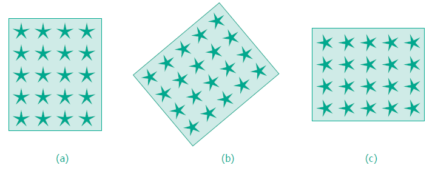
Now, look at the following example.
7 minus 3 = 4 but 3 minus 7 will not give the same answer. Similarly, the answers of 12 divided by 6 and 6 divided by 12 are not equal.
That is, 7 minus 3 not equal to 3 minus 7 and 12 divided by 6 not equal to 6 divided by 12
Hence, In whole numbers subtraction and division are not commutative.
TRY THESE
When several numbers are added, the order in which the numbers are added does not matter. This is called associativity of addition. Similarly, when several numbers are to be multiplied, the order in which the numbers are multiplied does not matter. This is called associativity of multiplication.
It can be said that the following equations are correct, without actually doing any addition or multiplication, but by using the property of associativity. A few examples are given below:
(43 + 57) + 25 = 43 + (57 + 25)
12 multiplied by (15 multiplied by 7) = bracket of (12 multiplied by 15) multiplied by 7
35,784 + (48crores 12 lakhs 69,841 + 3) = (35,784 + 48 crores 12 lakhs 69,841) + 3
(39,458 multiplied by 84,321) multiplied by 17 = 39,458 multiplied by (84,321 multiplied by 17)
It is to be noted that here too, subtraction and division are not associative.
An interesting fact relating to addition and multiplication comes from the following patterns:
(72 in to 13) + (28 in to 13) = (72 + 28) × 13
37 in to 102 = (37 in to 100) + (37 in to 2)
37 in to 98 = (37 in to 100) minus (37 in to 2)
From the last two cases, we are arriving at the following equations:
37 in to (100 + 2) = (37 in to 100) + (37 in to 2)
37 in to (100 minus 2) = (37 in to 100) minus (37 in to 2)
It can be noted that the product of a number and a sum of numbers can be written as the sum of two products. Similarly, the product of a number and a number got by subtraction can be written as the difference of two products. This property is called the property of distributivity of multiplication over addition or subtraction. It is a very useful property to group numbers in a convenient way. Now let us say 18 in to 6 = (10 + 8) in to 6 in an easy way as shown in Figure 1.3
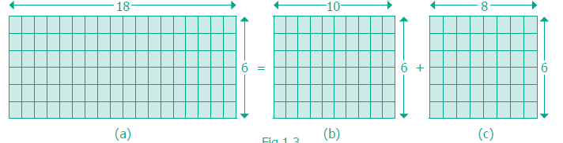
Thus, 18 in to 6 = (10 + 8) in to 6 is shown clearly in the above figure.
It is to be noted that addition does not distribute over multiplication.
For example,
10 + (10 in to 5) = 60 and (10 + 10) in to (10 + 5) = 300 are not equal.
When zero is added to any number, we get the same number. Similarly, when we multiply any number by 1, we get the same number. So, zero is called the additive identity and one is called the multiplicative identity for whole numbers.
TRY THESE
Complete the following tables.
9 |
+ |
0 |
= |
9 |
7 |
+ |
0 |
= |
dash |
0 |
+ |
17 |
= |
17 |
0 |
+ |
dash |
= |
37 |
0 |
+ |
dash |
= |
dash |
11 |
× |
1 |
= |
11 |
7 |
× |
55 |
= |
55 |
1 |
× |
12 |
= |
dash |
1 |
× |
dash |
= |
100 |
1 |
× |
dash |
= |
dash |
Finally, these are some simple observations that are important.
Box item begin
NOTE
Any number multiplied by zero gives zero.
Box item end.
TRY THESE
Complete the table.
6 |
+ |
8 |
= |
14, a natural number |
4 |
+ |
5 |
= |
9, a natural number |
4 |
× |
5 |
= |
20, a natural number |
6 |
× |
8 |
= |
48, a natural number |
dash |
+ |
dash |
= |
dash |
dash |
+ |
dash |
= |
dash |
dash |
× |
dash |
= |
dash |
dash |
× |
dash |
= |
dash |
6 |
+ |
8 |
= |
14 , a whole number |
4 |
+ |
5 |
= |
9, a whole number |
15 |
× |
0 |
= |
0, a whole number |
11 |
× |
2 |
= |
22, a whole number |
dash |
+ |
dash |
= |
dash |
dash |
+ |
dash |
= |
dash |
dash |
× |
dash |
= |
dash |
dash |
× |
dash |
= |
dash |
All such properties together play a vital role in the Number System. When we learn Algebra, we can realise the usefulness of these properties of the Number System and we can find ways of extending it too.
Box item begin
Do you know?
How will you read the large number given below?
731,
687,
303,
715,
884,
105,
727
This is read as 731 quintillion, 687 quadrillion, 303 trillion, 715 billion, 884 million, 105 thousand, 727 ones.
Box item end.
Exercise 1.5
1. Fill in the blanks.
1. The difference between the smallest natural number and the smallest whole number is dash.
2. 17 × dash = 34 × 17
3. When dash. is added to a number, it remains the same.
4. Division by dash. is not defined.
5. Multiplication by dash. leaves a number unchanged.
2. Say True or False.
1. 0 is the identity for multiplication of whole numbers.
2. Sum of two whole numbers is always less than their product.
3. Both addition and multiplication are associative for whole numbers.
4. Both addition and multiplication are commutative for whole numbers.
5. Multiplication is distributive over addition for whole numbers.
3. Name the property being illustrated in each of the cases given below.
1. 75 + 34 = 34 + 75
2.(12 into 4) into 8 = 12 into (4 × 8)
3. 50 + 0 = 50
4. 50 into 1 = 50
5. 50 into 42 = 50 into 40 + 50 into 2
4. Use the properties of whole numbers and simplify.
1. 50 into 102
2. 500 into 689 minus 500 into 89
3. 4 into 132 into 25
4. 196 + 34 + 104
Objective Type Questions
5. (53 + 49) into 0 is
(a) 102
(b) 0
(c) 1
(d) 53 + 49 into 0
6. 59 divided by 1 is
(a) 1
(b) 0
(c) 1 divided by 59
(d) 59
7. The product of a non-zero whole number and its successor is always
(a) an even number
(b) an odd number
(c) zero
(d) none of these
8. The whole number that does not have a predecessor is
(a) 10
(b) 0
(c) 1
(d) none of these
9. Which of the following expressions is not zero?
(a) 2 into 0
(b) 0 + 0
(c) 2 + 0
(d) 0 minus 0
10. Which of the following is not true?
(a) (4237 + 5498) + 3439 = 4237 + (5498 + 3439)
(b) (4237 into 5498) whole into 3439= 4237 into (5498 into 3439)
(c) 4237 + 5498 into 3439 = (4237 + 5498) into 3439
(d) 4237 whole into (5498 + 3439) = (4237 into 5498) + (4237 into 3439)
Exercise 1.6
Miscellaneous Practice Problems
1. Try to open my locked suitcase which has the biggest 5 digit odd number as the password comprising the digits 7, 5, 4, 3 and 8. Find the password.
2. As per the census of 2001, the population of four states are given below. Arrange the states in ascending and descending order of their population.
State |
Population |
Tamil Nadu |
7crores 21lakhs 47,030 |
Rajasthan |
6 crores 85 lakhs 48,437 |
Madhya Pradesh |
7 crores 26 lakhs 26,809 |
West Bengal |
9 crores 12 lakhs 76,115 |
3. Study the following table and answer the questions.
Year |
Number of Tigers |
1990 |
3500 |
2008 |
1400 |
2011 |
1706 |
2014 |
2226 |
1. How many tigers were there in 2011?
2. How many tigers were less in 2008 than in 1990?
3. Did the number of tigers increase or decrease between two thousand eleven and two thousand fourteen? If yes, by how much?
4. Mullaikodi has 25 bags of apples. In each bag there are 9 apples. She shares them equally amongst her 6 friends. How many apples do each get? Are there any apples left over?
5. A poultry has produced 15472 eggs and fits 30 eggs in a tray. How many trays do they need?
Challenging Problems
6. Read the table and answer the following questions.
Name of the Star |
Diameter (in miles) |
Sun |
8 lakhs 64,730 |
Sirius |
15 lakhs 56,500 |
Canopus |
2,59 lakhs 41,900 |
Alpha Centauri |
10 lakhs 37,700 |
Arcturus |
1 crores 98 lakhs 88,800 |
Vega |
25 lakhs 94200 |
1.Write the Canopus star’s diameter in words, in the Indian and the International System.
2.Write the sum of the place values of 5 in Sirius star’s diameter in the Indian System.
3.Eight hundred sixty four million seven hundred thirty. Write in Indian System.
4.Write the diameter in words of Arcturus star in the International System.
5.Write the difference of the diameters of Canopus and Arcturus stars in the Indian and the International Systems.
7. Anbu asks Arivu Selvi to guess a five digit odd number. He gives the following hints.
What is Arivu Selvi answer? Does she give more than one answer?
8. A Music concert is taking place in a stadium. A total of 7,689 chairs are to be put in rows of 90.
1. How many rows will there be?
2. Will there be any chairs left over?
9. Round off the seven digit number 29 lakhs 75,842 to the nearest lakhs and ten lakhs. Are they the same?
10. Find the 5 or 6 or 7 digit numbers from a newspaper or a magazine to get a rounded number to the nearest ten thousand.
ICT Corner
NUMBERS
Expected Result is shown in this picture
Step – 1 Open the Browser, Copy and paste the link given below (or) by type the URL given (or) Scan the QR Code.
Step - 2 GeoGebra worksheet named “Place Value” will open. A Natural number is given. You can change the problem by clicking on “Problem” button.
Step-3 In the bottom page, Answer the question asked by typing the number related to the queson. Step-4 Now Click on the “Place Value” to see all the place values. Repeat the test by clicking on “Problem”.
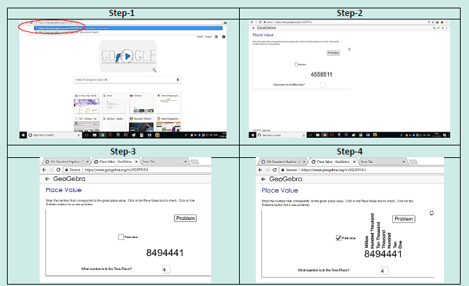
Browse in the link Place Value: - https://www.geogebra.org/m/XG3PPt3U
Learning Objectives
Step 1 Think of any number |
Step 2 Multiply it by 2 |
Step 3 Add 20 |
Step 4 Divide by 2 |
Step 5 Subtract the original number you had thought in step 1 |
Is your answer 10? Is it the same for all in the class? Verify it with your friend who might have started with a number other than your number. Surprised? What if you started with a fraction, say 1 divided by 2 or 3 divided by 4 or 4 divided by 5 ? In this game, regardless of the number you started with, the answer will be 10.
Step 1 4 |
Step 2 4 into 2 = 8 |
Step 3 8 + 20 = 28 |
Step 4 28 divided by 2 = 14 |
Step 5 14 minus 4 = 10 |
Step 1 9 |
Step 2 9 into 2 = 18 |
Step 3 18 + 20 = 38 |
Step 4 38 divided by 2 = 19 |
Step 5 19 minus 9 = 10 |
So, we can say that the same will happen for other numbers too.
You will find that Algebra is interesting and useful in solving problems in our daily life such as
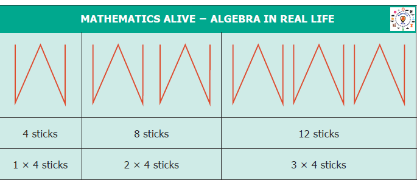
MATHEMATICS ALIVE − ALGEBRA IN REAL LIFE
4 sticks
1 × 4 sticks
8 sticks
2 × 4 sticks
12 sticks
3 × 4 sticks
Mathematics is easy when we look at it as a study of patterns. Patterns allow us to make reasonable guesses. Understanding patterns provide a clear basis for problem solving skills. In this chapter, we are going to look at patterns that deals with numbers. For example, let us list the numbers we know in order
1, 2, 3, 4, 5, 6, 7, 8, 9, 10 Exceedra
We observe that 1 is odd, 2 is even, 3 is odd, 4 is even Exceedra
Thus odd numbers and even numbers alternate with each other. If these is a sequence 12, 8, 4 Exceedra
can you find the next number? Easy, each number is obtained by subtracting 4 from the previous number. So the fourth number is 0.
The branch of Mathematics that deals with such patterns is called Algebra. Today Algebra is used widely in many fields that include banking, insurance, accounting, statistics, science, engineering, manufacturing and so on.
TRY THESE
1. 5, 8, 11, 14, dash, dash , dash
2. If 15873 into 7 = 1 lakh 11111 and 15873 into 14 = 2lakhs 22222 then what is
15873 into 21 =? and 15873 into 28 =?
|
|
|
|
|
|
Pattern Squares |
1st 1 |
2nd 2 |
3rd 3 |
4th dash |
5th dash |
Pattern Circles |
1st 3 |
2nd 6 |
3rd 9 |
4th dash |
5th dash |
In the first chapter on Whole Numbers, you have learnt about numbers that are multiplied by 1 or 0.
For example, we know, 57 into 1 = 57 and 43 into 0 = 0.
But we also know that this statement is true for all numbers (not just for the above two). So, can we say “any number” into 1 = "the same number" that we started with?
Algebra gives a way for writing such facts in a short and sweet way. We can write the above statement as n into 1 = n, where n is a number. Here n on the left-hand side is just a letter that is used instead of saying "any number". The number on the right-hand side is the same n. This ensures that we get a correct statement!
In Algebra, we say that “n” is a variable. A variable is a symbol (usually an alphabet like n or x) that represents a number. Variables often help us to write briefly what we mean by a relation. In n into 1 = n, left side number quantity 1 do not vary always. So we call it as constant.
For example, the following patterns such as,
7 + 9 = 9 + 7
57 + 43 = 43 + 57
123 + 456 = 456 + 123
7,098 + 2,018 = 2,018 + 7,098
35,784 + 48crores 12lakhs 69,841 = 48 crores 12 lakhs 69,841 + 35,784
Can be simply summarized as a + b = b + a.
Here, we have two variables namely “a” and “b”. Each variable can take “any value”, but the value of ‘a’ is the same on both sides, and the value of ‘b’ is also the same on both sides. But, the values of ‘a’ and ‘b’ need not be equal to each other.
Can you give a similar interpretation for a into b = b into a ?
Box item begin
NOTE
Similar rules cannot be written for subtraction! We know what is ‘7 minus 3’, but not ‘3 minus 7’. So ‘a minus b’ and ‘b minus a’ are not the same!
Box item end
Consider the following situations.
Situation 1
Mathi is 3 years elder than his sister Nila. If we know Nila's age, can we find Mathi’s?
If Nila’s age is ‘n’, you can see that Mathi’s age is always ‘n + 3’. This is the advantage of using variables. We do not need different statements for different values of the age! As we give different values for ‘n’, we get different values for ‘n + 3’, here 3 is a constant. This is clear from the following table.
Nila's age 'n' |
Mathi’s age 'n + 3' |
If n = 4 |
If n = 7 |
If n = 8 |
If n = 11 |
If n = 12 |
If n = 15 |
Situation 2:
Patterns using Ice Candy Sticks
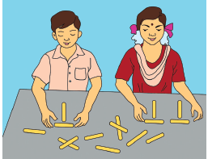
Pari and Manimegalai made some patterns with ice candy sticks.
To make one ‘T’, how many ice candy sticks are used by them? (Two sticks)
To make two ‘T’s, how many ice candy sticks are used by them? (Four sticks)
Continuing this, they prepared the following table to find the number of ice candy sticks used by them
Number of ‘T’ s formed 1 |
Number of ‘T’ s formed 2 |
Number of ‘T’ s formed 3 |
Number of ‘T’ s formed 4 |
Number of ‘T’ s formed dash |
Number of ‘T’ s formed k |
Number of ‘T’ s formed dash |
Number of ice candy sticks used or required 2 |
Number of ice candy sticks used or required 4 |
Number of ice candy sticks used or required 6 |
Number of ice candy sticks used or required 8 |
Number of ice candy sticks used or required dash |
Number of ice candy sticks used or required 2k |
Number of ice candy sticks used or required dash |
Number of ice candy sticks used or required 1 into 2 |
Number of ice candy sticks used or required 2 into 2 |
Number of ice candy sticks used or required 3 into 2 |
Number of ice candy sticks used or required 4 into 2 |
Number of ice candy sticks used or required dash |
Number of ice candy sticks used or required k into 2 |
Number of ice candy sticks used or required dash |
From the above table, it is clear that if the number of ‘T’s required by them is ‘k’ then the number of ice candy sticks required by them will be k into 2 = 2 k. Here ‘k’ is a variable.
Box item begin
TRY THESE
Use a variable to write the rule, which gives the number of ice candy sticks required to make the following patterns.
1 a pattern of letter C as C Symbol
2 a pattern of letter M as M symbol
Box item end.
Consider that there are ‘n’ number of apples in a basket. If 5 more apples are added, what will be the total number of apples in the basket now?
The total number of apples can be easily framed into an algebraic statement as ‘n + 5’. This algebraic statement ‘n + 5’ tells that, whatever be the number of apples you had earlier, there are 5 more apples now in the basket.
A few examples are given in the following table.
Serial Number |
Algebraic statement |
Verbal statement |
Serial Number 1 |
Algebraic statement m + 14 |
Verbal statement 14 more than ‘m’ |
Serial Number 2 |
Algebraic statement x minus 6 |
Verbal statement ‘x’ is reduced by 6 |
Serial Number 3 |
Algebraic statement 3 y (or) 3 × y |
Verbal statement product of 3 and ‘y’ |
Serial Number 4 |
Algebraic statement 5 ÷ z (or) 5 divided by z |
Verbal statement 5 divided by ‘z’ |
Serial Number 5 |
Algebraic statement 2 p minus 5 |
Verbal statement 5 less to 2 times ‘p’ |
Likewise, verbal statements can be converted to algebraic statements as follows.
Serial Number |
Algebraic statement |
Verbal statement |
Serial Number 1 |
Algebraic statement a + 5 |
Verbal statement dash |
Serial Number 2 |
Algebraic statement 6z minus 1 |
Verbal statement dash |
Serial Number 3 |
Algebraic statement 12 y |
Verbal statement dash |
Serial Number 4 |
Algebraic statement x divided by 6 |
Verbal statement dash |
TRY THESE
A few examples are given in the following table.
Serial Number |
Verbal statement |
Algebraic statement |
Serial Number 1 |
Verbal statement ‘x’ is increased by 21 |
Algebraic statement x + 21 |
Serial Number 2 |
Verbal statement 7 is taken away from ‘a’ |
Algebraic statement a minus 7 |
Serial Number 3 |
Verbal statement Twice ‘p’ |
Algebraic statement 2 p |
Serial Number 4 |
Verbal statement 10 divided by ‘m’ |
Algebraic statement 10 ÷ m |
Serial Number 5 |
Verbal statement The product of 7 and ‘y’ is divided by 2 |
Algebraic statement 7 y ÷ 2 |
Box item begin
TRY THESE
Serial Number |
Verbal statement |
Algebraic statement |
Serial Number 1 |
Verbal statement Seven times of ‘n’ minus 5 |
Algebraic statement dash |
Serial Number 2 |
Verbal statement The sum of ‘x’ and 4 |
Algebraic statement dash |
Serial Number 3 |
Verbal statement 3 times ‘y’ is divided by 8 |
Algebraic statement dash |
Serial Number 4 |
Verbal statement 11 is multiplied by ‘m’ |
Algebraic statement dash |
Box item end.
Let us fill in the empty boxes
(a) box + 3 = 8
(b) 2 + box = 9
(c) 11 minus 5 = box
The box stands for an unknown number.
To make the equations meaningful, we shall write 5 in the first box, we shall write 7 in the second box and we shall write 6 in the third box.
TRY THESE
Find the unknown.
1. 37 + 43 = 43 + box
2. (22 + 10) + 15 =box + (10 + 15)
3. If 7 into 46 = 322 then 46 into 7 =box
Example 2.1
Suppose that there are some eggs in a tray. If 6 eggs are taken out from it and still 10 eggs are remaining, how many eggs are there in the tray?
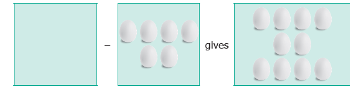
According to the given statement,
Unknown number of eggs in the tray |
minus |
6 eggs |
gives |
10 eggs |
This can be written as, x minus 6 gives 10, where ‘x’ denotes the unknown number.
Now, we will find out for what value of ‘x’, x minus 6 gives 10.
Value of ‘x’ Yes or No |
x minus 6 |
Result |
Is it 10? |
Value of 7 |
7 minus 6 |
Result 1 |
Is it 10 No |
Value of 10 |
10 minus 6 |
Result 4 |
Is it 10 No |
Value of 12 |
12 minus 6 |
Result 6 |
Is it 10 No |
Value of 15 |
15 minus 6 |
Result 9 |
Is it 10 No |
Value of 16 |
16 minus 6 |
Result 10 |
Is it 10 Yes |
Value of 18 |
18 minus 6 |
Result 12 |
Is it 10 No |
Hence, the unknown number (variable) ‘x’ takes the value 16.
TRY THIS
Find the suitable value of ‘m’, to get a sum of 9?
m |
m + 4 |
Result |
Is it 9? Yes or No |
m 1 |
m + 4 1+4 |
Result 5 |
Is it 9? No |
m 2 |
dash |
dash |
dash |
m 3 |
dash |
dash |
dash |
m 4 |
dash |
dash |
dash |
m 5 |
dash |
dash |
dash |
Example 2.2
Athiyan and Mugilan are brothers. Athiyan is ‘p’ years old and Mugilan is elder to Athiyan by 6 years. Write an algebraic statement for this and find the age of Mugilan if Athiyan is 20 years old.
Age of Athiyan = ‘p’ years
Age of Mugilan = ‘p + 6’ years (algebraic statement)
If p = 20, then Mugilan’s age is = 20 + 6
= 26 years.
Exercise 2.1
Fill in the blanks.
1. The letters a, b, c, etc x, y, z are used to represent dash.
2. The algebraic statement of ‘f decreased by rupees 5 is dash.
3. The algebraic statement of ‘s divided by 5’ is dash.
4. If A’s age is ‘n’ years now, 7 years ago A’s age was dash.
5. If ‘p minus 5’ gives 12 then ‘p’ is dash.
2. Say True or False.
1.
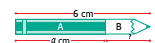
The length of part B in the pencil shown is ‘a minus 6’.2. If the cost of an is ‘x’ and the cost of a is rupees 5, then the total cost of fruits is rupees 'x + 5'.
3. 10 more to three times 'c' is '10 c + 3'
4. If the cost of 10 rice bags is rupees ‘t’, then the cost of 1 rice bag is Rupees t divided by 10
5. The product of ‘q’ and 20 is '20 q'.
3. Draw the next two patterns and complete the table.
Shapes |
1st Pattern |
2nd Pattern |
3rd Pattern |
4th Pattern |
5th Pattern |
Squares |
1st Pattern 1 |
2nd Pattern 2 |
3rd Pattern 3 |
4th Pattern dash |
5th Pattern dash |
Circles |
1st Pattern 1 |
2nd Pattern 2 |
3rd Pattern 3 |
4th Pattern dash |
5th Pattern dash |
Triangles |
1st Pattern 2 |
2nd Pattern 4 |
3rd Pattern 6 |
4th Pattern dash |
5th Pattern dash |
4. Arivazhagan is 30 years younger to his father. Write Arivazhagan's age in terms of his father's age.
5. If ‘u’ is an even number, how would you represent
1. the next even number?
2. the previous even number?
6. Express the following verbal statement to algebraic statement.
1. ‘t’ is added to 100.
2. 4 times ‘q’
3. 4 less to 9 times of ‘y’.
7. Express the following algebraic statement to verbal statement.
1. x ÷ 3
2. 11 + 10x
3. 70s
8. The teacher asked two students to write the algebraic statement for the verbal statement “8 more than a number”. Vetri wrote ‘8 + x’ but Maran wrote ‘8 x’. Who gave the correct answer?
9. Answer the following questions.
1. If ‘g’ is equal to 300 what is the value of ‘g minus 1’ and ‘g + 1’?
2. What is the value of ‘s’, if '2 s minus 6' gives 30?
10. Complete the table and find the value of ‘k’ for which k divided by 3 gives 5.
K 3 divided by 3 1 |
K 6 divided by 3 2 |
k 9 k divided by 3 dash |
k 12 k divided by 3 dash |
k 15 k divided by 3 dash |
k 18 k divided by 3 dash |
Objective Type Questions
11. Variable means that it
(a) can take only a few values
(b) has a fixed value
(c) can take different values
(d) can take only 8 values
12. The number of days in ‘w’ weeks is
(a) 30 + w
(b) 30 w
(c) 7 + w
(d) 7w
13. The value of ‘x’ in the circle is
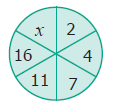
(a) 6
(b) 8
(c) 21
(d) 22
14. The value of ‘y’ in y + 7 = 13 is
(a) y = 5
(b) y = 6
(c) y = 7
(d) y = 8
15. 6 less to ‘n’ gives 8 is represented as
(a) n minus 6 = 8
(b) 6 minus n = 8
(c) 8 minus n = 6
(d) n minus 8 = 6
Exercise 2.2
Miscellaneous Practice Problems
1. Complete the following pattern.
9 minus 1 =
98 minus 21 =
987 minus 321 =
9876 minus 4321 =
98765 minus 54321 =
What comes next?
2. A piece of wire is ‘12s’ centimeter long. What will be the length of the side, if it is formed as
1. an equilateral triangle
2. a square
3. Identify the value of the shapes and figures in the table given below and verify their addition horizontally and vertically.
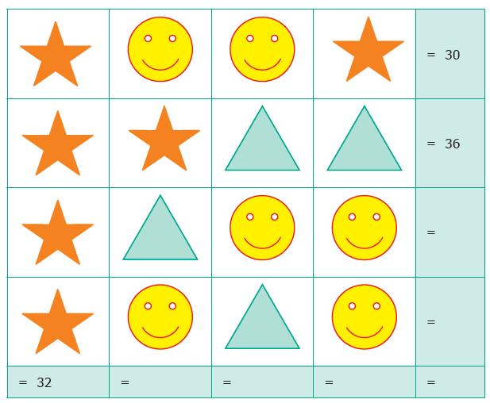
4. The table given below shows the results of the matches played by 8 teams in a Kabaddi championship tournament.
Total Matches played |
A Teams 8 |
B Teams 7 |
C Teams n |
D Teams a |
E Teams 9 |
F Teams 10 |
G Teams 8 |
H Teams y |
Matches won |
A Teams 5 |
B Teams 6 |
C Teams 4 |
D Teams 7 |
E Teams b |
F Teams 6 |
G Teams x |
H Teams 3 |
Matches lost |
A Teams k |
B Teams m |
C Teams 6 |
D Teams 2 |
E Teams 3 |
F Teams c |
G Teams 4 |
H Teams 6 |
Find the value of all the variables in the table given above.
Challenging Problems
5. Gopal is 8 years younger to Karnan. If the sum of their ages is 30, how old is Karnan?
6. The rectangles made of identical square blocks with varying lengths but having only two square blocks as width are given below.
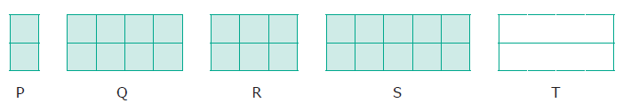
1. How many small size squares are there in each of the rectangles P, Q, R and S?
2. Fill in the boxes.
Rectangle |
|
|
|
|
|
Number of small size squares along the breadth |
P 2 |
Q 2 |
R dash |
S 2 |
T 2 |
Number of squares along the length |
P 1 |
Q 4 |
R 3 |
S dash |
T x |
Total number of squares in rectangle |
P dash |
Q 8 |
R dash |
S 10 |
T dash |
7. Find the variables from the clues given below and solve the cross−word puzzle.
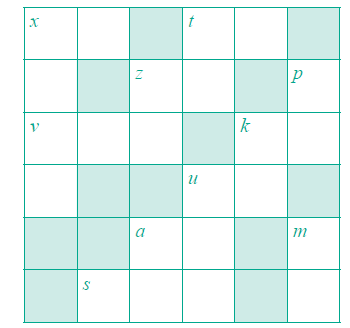
Across |
Down |
x + 40 gives 100 |
x is 1005 multiplied by 6 |
7 7 reduced from t gives 31 |
t ÷ 7 = 5 |
z is 5 added 5 times |
p is the predecessor of first 3 digit number |
v is the whole number zero plus number of days in a ordinary year |
z is the number of weeks in a year digits reversed () |
k is 24 added to 25 |
k is 11 times 4 |
u is 2 added to two times 11 gives the number of hours in a day |
u is product of 23 and 9 |
a is 20 more to 40 |
a is 4 added to the product of 12 and 5 |
s minus 1 gives 246 is the number of letters in Tamil language |
m is the successor of 9 |
ICT Corner
INTRODUCTION TO ALGEBRA
Expected Result is shown in this picture
Step – 1 Open the Browser, Copy and paste the link given below (or) by type the URL given (or) Scan the QR Code.
Step - 2 GeoGebra Work Book “6th Standard Algebra” will appear. There are several worksheets. In that open “Linear Equation Generator”
Step-3 In the page select the difficulty level by moving the slider. Linear equation will appear on the top solve it and enter your answer in the “x” box and hit enter.
Step-4 If your answer is correct “Correct” menu will appear. Try more problems by clicking on “New Problem”
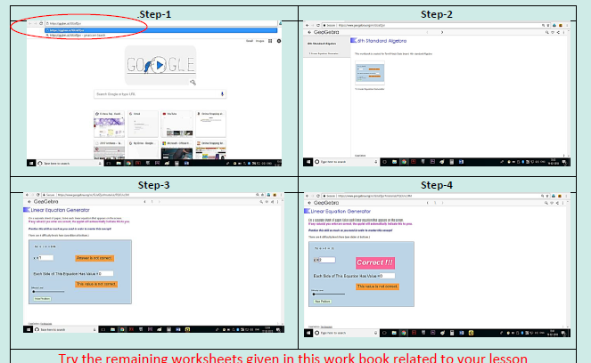
Browse in the link Algebra: - https://ggbm.at/GUafZjxr
Learning Objectives
Recap
1. Which of the following fractions is not a proper fraction?
(a) 1 divide by 3
(b) 2 divide by 3
(c) 5 divide by 10
(d) 10 divide by 5
2. The equivalent fraction of 1 divided by 7 is dash.
(a) 2 divide by 15
(b) 1 divide by 49
(c) 7 divide by 49
(d) 100 divide by 7
1. 5 divide by 8 box 1 divide by 10
2. 9 divide by 12 box 3 divide by 4
4. Anban says that 2 divide by 6th of the group of triangles given below are blue. Is he correct?
5. Joseph has a flower garden. Draw a picture which shows that 2 divided by 10th of the flowers are red and the rest of them are yellow.
6. Malarkodi has 10 oranges. If she ate 4 oranges, what fraction of oranges was not eaten by her?
7. After sowing seeds on day one, Muthu observes the growth of two plants and records it. In 10 days, if the first plant grew 1 divide by 4th of an inch and the second plant grew 3 divide by 8th of an inch, then which plant grew more?
In our daily life, we handle lots of situations where we compare quantities. Comparison of our heights, weights, marks secured in examinations, speeds of vehicles, distances travelled, auto fare to taxi fare, bank balances at different periods of time and many more things are done. Comparison is usually between quantities of the same kind and not of different kind. It will not be meaningful to compare the height of a person with the age of another person. Also, we need a standard measure for comparison.
This sort of comparison by expressing one quantity as the number of times the other is called a ‘Ratio’.
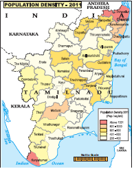
555 persons to one square kilometres.
MATHEMATICS ALIVE – RATIO IN REAL LIFE
Male |
|
Height |
Ideal Weight |
Height 4 inches 6 inches |
Ideal Weight 28 to 35 kilogram. |
Height 4 inches 7 inches |
Ideal Weight 30 to 39 kilogram. |
Height 4 inches 8 inches |
Ideal Weight 33 to 40 kilogram. |
Height 4 inches 9 inches |
Ideal Weight 35 to 44 kilogram. |
Height 4 inches 10 inches |
Ideal Weight 38 to 46 kilogram. |
Height 4 inches 11 inches |
Ideal Weight 40 to 50 kilogram. |
Height 5 inches 0 inches |
Ideal Weight 43 to 53 kilogram. |
Height 5 inches 1 inches |
Ideal Weight 45 to 55 kilogram. |
Height 5 inches 2 inches |
Ideal Weight 48 to 59 kilogram. |
Height 5 inches 3 inches |
Ideal Weight 50 to 61 kilogram. |
Height 5 inches 4 inches |
Ideal Weight 53 to 65 kilogram. |
Height 5 inches 5 inches |
Ideal Weight 55 to 68 kilogram. |
Height 5 inches 6 inches |
Ideal Weight 58 to 70 kilogram. |
Height 5 inches 7 inches |
Ideal Weight 60 to 74 kilogram. |
Height 5 inches 8 inches |
Ideal Weight 63 to 76 kilogram. |
Height 5 inches 9 inches |
Ideal Weight 65 to 80 kilogram. |
Height 5 inches 10 inches |
Ideal Weight 67 to 83 kilogram. |
Height 5 inches 11 inches |
Ideal Weight 70 to 85 kilogram. |
Height 6 inches 0 inches |
Ideal Weight 72 to 89 kilogram. |
Female |
|
Height |
Ideal Weight |
Height 4 inches 6 inches |
Ideal Weight 28 to 35 kilogram. |
Height 4 inches 7 inches |
Ideal Weight 30 to 37 kilogram. |
Height 4 inches 8 inches |
Ideal Weight 32 to 40 kilogram. |
Height 4 inches 9 inches |
Ideal Weight 35 to 42 kilogram. |
Height 4 inches 10 inches |
Ideal Weight 36 to 45 kilogram. |
Height 4 inches 11 inches |
Ideal Weight 39 to 47 kilogram. |
Height 5 inches 0 inches |
Ideal Weight 40 to 50 kilogram. |
Height 5 inches 1 inches |
Ideal Weight 43 to 52 kilogram. |
Height 5 inches 2 inches |
Ideal Weight 45 to 55 kilogram. |
Height 5 inches 3 inches |
Ideal Weight 47 to 57 kilogram. |
Height 5 inches 4 inches |
Ideal Weight 49 to 60 kilogram. |
Height 5 inches 5 inches |
Ideal Weight 51 to 62 kilogram. |
Height 5 inches 6 inches |
Ideal Weight 53 to 65 kilogram. |
Height 5 inches 7 inches |
Ideal Weight 55 to 67 kilogram. |
Height 5 inches 8 inches |
Ideal Weight 57 to 70 kilogram. |
Height 5 inches 9 inches |
Ideal Weight 59 to 72 kilogram. |
Height 5 inches 10 inches |
Ideal Weight 61 to 75 kilogram. |
Height 5 inches 11 inches |
Ideal Weight 63 to 77 kilogram. |
Height 6 inches 0 inches |
Ideal Weight 65 to 80 kilogram. |
Comparison of Height and Weight by using ratio
Box item begin
Do you know?
It is possible to trace the origin of the word "ratio" to the Ancient Greek Medieval. Writers used the word proprotio ("proportion") to indicate ratio and proportionalities ("proprotionality") for the equality of ratios. Early translators rendered this into Latin as ratio ("reason"; as in the word "rational")
Box item end.
Think about this Situation
Let us consider a situation of cooking rice for two persons. The quantity of rice required for two persons is one cup. To cook every one cup of rice, we need to add two cups of water. Assuming that 8 more guests join for lunch, will the use of ratio help us in handing this situation?
The number of cups of rice and water required are given below.
Number of cups of rice 1 Number of cups of water (or) Number of persons 2 |
Number of cups of rice 2 Number of cups of water (or) Number of persons 4 |
Number of cups of rice 3 Number of cups of water (or) Number of persons 6 |
Number of cups of rice 4 Number of cups of water (or) Number of persons 8 |
Number of cups of rice 5 Number of cups of water (or) Number of persons 10 |
In all the cases, the number of cups of water (or) the number of persons is 2 times the number of cups of rice. So, we write
Number of cups of rice: Number of cups of water (or) the number of persons = 1is to 2
Such comparison is called as a Ratio.
Box item begin
NOTE
Box item end.
TRY THESE
1. Write the ratio of red tiles to blue tiles and yellow tiles to red tiles.
2. Write the ratio of blue tiles to that of red tiles and red tiles to that of total tiles.
3. Write the ratio of shaded portion to the unshaded portions in the following shapes
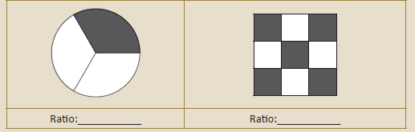
A few examples are given below.
Ratio of the number of small fish to the number of big fish is 5 is to 1
Ratio of the number of boys to girls in above figure is 5 is to 4
In the above example, the ratio of the number of small fish to the number of big fish is 5 is to 1. The same information cannot be written as 1 is to 5 and so, 5 is to 1 and 1 is to 5 are not the same.
If in a class, there are 12 boys and 12 girls, then the ratio of number of boys to the number of girls is expressed as 12 is to 12 which is the same as 1 is to 1.
TRY THESE
If the given quantity is in the same unit, put tick mark otherwise put wrong mark in the table below.
Serial Number |
Quantity |
Put tick mark or wrong mark |
Serial Number 1 |
Quantity 5 centimetres and 100 centimetres |
Put tick mark or wrong mark |
Serial Number 2 |
Quantity rupees 5 and 50 oranges |
Put tick mark or wrong mark |
Serial Number 3 |
Quantity 2 meter and 75 milli litre |
Put tick mark or wrong mark |
Serial Number 4 |
Quantity 7 kilograms and 700 meters |
Put tick mark or wrong mark |
Serial Number 5 |
Quantity 3 kilograms of potatoes and 2 kilograms onions |
Put tick mark or wrong mark |
Serial Number 6 |
Quantity 10 centimetres and 32 pencils |
Put tick mark or wrong mark |
Think about these situations
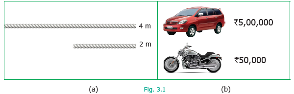
1. The larger rope is 4 meter long and the smaller rope is 2 meter long. This is expressed in the form
of ratio as 4 is it 2 and the simplest form of ratio of the larger rope to the smaller rope is 2 is it 1
(See Figure 3.1 (a))
2. The cost of a car is rupees 5 lakhs and the cost of a motorbike is rupees 50,000. This is expressed as 5lakhs is it 50000 equal to 50 is to 5 and the simplest form of ratio of the car to the motorbike is 10 is to 1 (See Figure 3.1 (b))
Example 3.1
Simplify the ratio 20 is to 5.
Solution
Step 1 : Write the ratio in fraction form as 20 divided by 5 .
Step 2 : Divide numerator and denominator by 5. That is, 20 divided by 5 whole divided by 5 divided by 5 is equal to 4 divided by 1 is equal to 4 is to 1
This is the ratio in the simplest form.
Box item begin
5 multiply 1 is equal to 5
5 multiply 2 is equal to 10
5 multiply 3 is equal to 15
5 multiply 4 is equal to 20
Box item end
Example 3.2
Find the ratio of 500 grams to 250 grams.
Solution
500 gram to 250 gram equal to 500 is to 250 is implies to 500 divided by 250 whole divided by 250 divided by 250 is equal to 2 divided by 1 is equal to 2 is to 1
This is the ratio in the simplest form.
Example 3.3
Madhavi and Anbu bought two tables for rupees 750 and rupees 900 respectively. What is the ratio of the prices of tables bought by Anbu and Madhavi?
Solution
The ratio of the price of tables bought by Anbu and Madhavi
900 is to 750 is equal to 900 divided by 750 is equal to 900 divided by 150 whole divided by 750 divided by 150 is equal to 6 divided by 5 is equal to 6 is to 5 . This is the ratio in the simplest form.
Example 3.4
What is the ratio of 40 minutes to 1 hour?
Solution
Step 1: Express the quantity in the same unit. (Hint: 1 Hour = 60 minutes)
Step 2: Now, the ratio of 40 minutes to 60 minutes is 40 is to 60 implies 40 divided by 60 is equal to 40 divided by 20 whole divided by 60 divided by 20 is equal to 2 divided by 3 is equal to 2 is to 3
This is the ratio in the simplest form.
Box item begin
1 hour = 60 minutes
20 in to 1 = 20
20 in to 2 = 40
20 in to 3 = 60
Box item end
TRY THESE
Write the ratios in the simplest form and fill in the table
Serial number 1 |
Quantity Ratio of 15 girls to 10 boys |
Ratio form 15 is to 10 |
Fraction from 15 divided by 10 |
Fraction from 15 divided by 5 whole divided by 10 divided by 5 is equal to 3 divided by 2 |
Simplest Form of ratio 3is to 2 |
Serial number 2 |
Quantity Ratio of 1meter 25 centimetres to 2 meter |
Ratio form 125 is it 200 (1meter equal to 100 centimetres) |
Fraction from 125 divided by 200 |
|
|
Serial number 3 |
Quantity Ratio of 3 Kilo gram to 750 gram |
Ratio form 3000 is it 750 (1kilo gram equal to 1000 gram) |
|
|
|
Serial number 4 |
Quantity Ratio of 70 minutes to 30 minutes |
|
|
|
|
.
Exercise 3.1
1. Fill in the blanks.
1. Ratio of rupees 3 to rupees 5 equal to dash.
2. Ratio of 3 meter to 200 centimetres equal to dash.
3. Ratio of 5 kilo meters 400 meter to 6 kilo meters equal to dash.
4. Ratio of 75 paise to rupees 2 equal to dash.
2. Say whether the following statements are True or False.
1. The ratio of 130 centimetres to 1 meter is 13 is to 10.
2. One of the terms in a ratio cannot be 1.
3. Find the simplified form of the following ratios.
1. 15 is to 20
2. 32 is to 24
3. 7 is to15
4. 12 is to 27
5. 75 is to100
4. Akilan walks 10 kilo meter in an hour while Selvi walks 6 kilo meter in an hour. Find the simplest ratio of the distance covered by Akilan to that of Selvi.
5. The cost of parking a bicycle is rupees 5 and the cost of parking a scooter is rupees 15. Find the simplest ratio of the parking cost of a bicycle to that of a scooter.
6. Out of 50 students in a class, 30 are boys. Find the ratio of
1. number of boys to the number of girls.
2. number of girls to the total number of students.
3. number of boys to the total number of students.
Objective Type Questions
7. The ratio of rupees 1 to 20 paise is dash.
(a) 1 is to 5
(b) 1 is to 2
(c) 2 is to 1
(d) 5 is to 1
8. The ratio of 1 litre to 50 millilitre is dash.
(a) 1 is to 5
(b) 1 is to 20
(c) 20 is to 1
(d) 5 is to 1
9. The length and breadth of a window are in 1meter and 70 centimetre respectively. The ratio of the length to the breadth is dash.
(a) 1 is to 7
(b) 7 is to 1
(c) 7 is to 10
(d) 10 is to 7
10. The ratio of the number of sides of a triangle to the number of sides of a rectangle is
(a) 4 is to 3
(b) 3 is to 4
(c) 3 is to 5
(d) 3 is to 2
11. If Azhagan is 50 years old and his son is 10 years old then the simplest ratio between the age of Azhagan to his son is
(a) 10 is to 50
(b) 50 is to 10
(c) 5 is to 1
(d) 1 is to 5
We can get equivalent ratios by multiplying or dividing the numerator and denominator by a common number. This is clear from the following example. Let us find the ratio between breadth and length of the following rectangles given below.
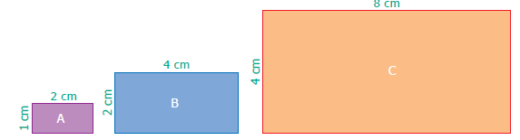
TRY THESE
1. For the given ratios, find two equivalent ratios and complete the table.
Serial number 1 |
Ratio 1 is to 3 |
Fraction Form 1 divided by 3 |
Equivalent ratio 1 divided by 3 into 2 divided by 2 equal to 2 divided by 6 is equal to 2 is to 6 and 1divided by 3 into 3 divided by 3 is equal to 3 divided by 9 is equal to 3 is to 9 |
Serial number 2 |
Ratio 3 is to 7 |
Fraction Form 3 divided by 7 |
|
Serial number 3 |
Ratio 5 is to 8 |
Fraction Form 5 divided by 8 |
|
2. Write three equivalent ratios and fill in the boxes.
Serial number 1 |
Ratio 4 is to 5 |
Equivalent ratio 8 is to box |
Equivalent ratio box is to 50 |
Equivalent ratio 12 is to box |
Serial number 2 |
Ratio 7 is to 2 |
Equivalent ratio box is to 10 |
Equivalent ratio 14 is to box |
Equivalent ratio 49 is to box |
Serial number 3 |
Ratio 8 is to 5 |
Equivalent ratio 32 is to box |
Equivalent ratio box is to 50 |
Equivalent ratio 16 is to box |
3. For the given ratios, find their simplest form and complete the table.
Serial number 1 |
Ratio 5 is to 60 |
Fraction form 5 divided by 60 |
Simplest form 5 divided by 5 whole divided by 60 divided by 5 is equal to 1 divided by 12 is equal to 1 is to 12 |
Serial number 2 |
Ratio 4000 is to 6000 |
Fraction form 4000 divided by 6000 |
|
Serial number 3 |
Ratio 1100 is to 5500 |
|
|
Consider the following situations
Situation 1
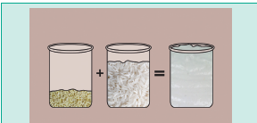
In the Idly Batter, the ratio of black gram to idly rice is 1is to 4
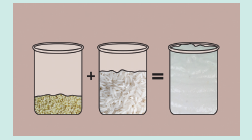
In the Idly Batter, the ratio of black gram to idly rice is 1is to 3
Can you find which ratio is greater in Figure 3.2? Express ratios as a fraction and then find the equivalent fractions, until the denominators are the same, and compare the fractions with common denominators. This is done as follows :
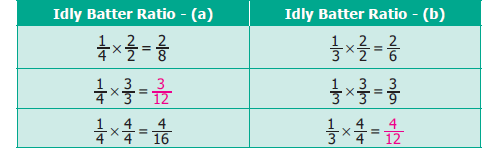
Idly Batter Ratio - (a) 1 divided by 4 into 2 divided by 2 is equal to 2 divided by 8 |
Idly Batter Ratio - (b) 1 divided by 3 into 2 divided by 2 is equal to 2 divided by 6 |
Idly Batter Ratio - (a) 1 divided by 4 into 3 divided by 3 is equal to 3 divided by 12 |
Idly Batter Ratio - (b) 1 divided by 3 into 3 divided by 3 is equal to 3 divided by 9 |
Idly Batter Ratio - (a) 1 divided by 4 into 4 divided by 4 is equal to 4 divided by 16 |
Idly Batter Ratio - (b) 1 divided by 3 into 4 divided by 4 is equal to 4 divided by 12 |
Comparing the equivalent ratios, 4 divided by 3 and 3 divided by 12 , we can conclude that 1 is to 3 is greater than 1 is to 4
Situation 2
Let us consider another situation. For example, if a thread of 5 meter is cut at 3 meter, then the length of two pieces are 3 meter and 2 meter and the ratio of the two pieces is 3 is to 2. From this we say that, a ratio ‘a is it b’ is said to have a total of ‘a plus b’ parts in it.
Example 3.5
Kumaran has rupees 600 and wants to divide it between Vimala and Yazhini in the ratio 2 is to 3. Who will get more and how much?
Solution
Divide the whole money into 2 plus 3 equal to 5 equal parts then, Vimala gets 2 parts out of 5 parts and Yazhini gets 3 parts out of 5 parts.
Amount Vimala gets = rupees 600 into 2 divided by 5 equal to rupees 240.
Amount Yazhini gets = rupees 600 into 3 divided by 5 equal to rupees 360 .
Vimala received rupees 240 and Yazhini gets rupees 360, which is rupees 120 more than that of Vimala.
Exercise 3.2
1. Fill in the blanks for the given equivalent ratios.
1. 3 is to 5 equal to 9 is to Dash
2. 4 is to 5 equal to Dash is to 10
3. 6 is to Dash equal to 1 is to 2
2. Complete the table.
1 Feet |
12 Inches |
2 Feet’s |
24 Inches |
3 Feet |
How many inchs? |
How many Feets ? |
72 Inches |
28 Days |
4 Weeks |
21 Days |
3 Weeks |
How many Days ? |
2 Weeks |
63 Days |
How many Weeks ? |
3. Say True or False.
1. 5 is to 7 is equivalent to 21 is to 15
2. If 40 is divided in the ratio 3 is to 2, then the larger part is 24.
4. Give two equivalent ratios for each of the following.
1. 3 is to 2
2. 1 is to 6
3. 5 is to 4
5. Which of the two ratios is larger?
1. 4 is to 5 or 8 is to 15
2. 3 is to 4 or 7 is to 8
3. 1 is to 2 or 2 is to 1
6. Divide the numbers given below in the required ratio.
1. 20 in the ratio 3 is to 2
2. 27 in the ratio 4 is to 5
3. 40 in the ratio 6 is to 14
7. In a family, the amount spent in a month for buying Provisions and Vegetables are in the ratio 3 is to 2. If the allotted amount is `4000, then what will be the amount spent for
1. Provisions and
2. Vegetables?
8. A line segment 63 centimetres long is to be divided into two parts in the ratio 3 is to 4. Find the length of each part.
Objective Type Questions
9. If 2 is to 3 and 4 is to dash are equivalent ratios, then the missing term is
(a) 6
(b) 2
(c) 4
(d) 3
10. An equivalent ratio of 4 is to 7 is
(a) 1 is to 3
(b) 8 is to 15
(c) 14 is to 8
(d) 12 is to 21
11. Which is not an equivalent ratio of 16 divided by 24?
(a) 6 divided by 9
(b) 12 divided by 18
(c) 10 divided by 15
(d) 20 divided by 28
12. If rupees 1600 is divided among A and B in the ratio 3 is to 5 then, B’s share is
(a) rupees 480
(b) rupees 800
(c) rupees 1000
(d) rupees 200
When two ratios are equal, a divided by b is equal to c divided by d. we say that the ratios are in Proportion. This is denoted as a is to b is to c is to d and it is read as ‘a is to b as c is to d’. The following situations explain about proportion.
Situation 1
The Teacher said to the students, “You can do a maximum of 4 projects in Mathematics. You will get 5 as internal marks for each project that you do”. Kamala asked, “Teacher, What if I do 2 or 3 or 4 projects?” The teacher replied, “For 2 projects you will get 10 marks, for 3 projects you will get 15 marks and for 4 projects you will get 20 marks”.
Here “1 project carries 5 marks” is equivalent to saying “2 projects carry 10 marks” and so on and hence the ratios, 1 is to 5 = 2 is to 10 = 3 is to 15 = 4 is to 20 are said to be in Proportion. Thus 1 is to 5 is in proportion to 2 is to 10, 3 is to 15, 4 is to 20 and so on. This is denoted by 1 is to 5 is to 2 is to 10 and it is read as ‘1 is to 5 as 2 is to 10’ and so on.
Situation 2
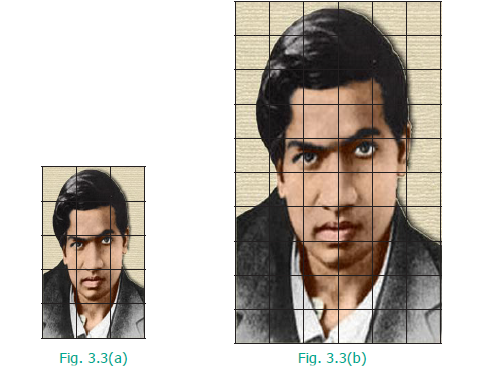
The size of the photograph of Srinivasa Ramanujan as shown in Figure 3.3 (a) is of length 5 grids and breadth 3 grids. Figure 3.3 (b) shows the enlarged size of the photograph of length 10 grids and breadth 6 grids. Here,
Photo grid length |
is to |
Enlarged Photo grid length |
Is equal to |
5 is to 10 (1 is to 2) |
and |
Photo grid breadth |
is to |
Enlarged Photo grid breadth |
Is equal to |
3 is to 6 (1 is to 2) |
As the two ratios are equal, the given figures are in proportion. This is represented as 5 is to 10 is to 3 is to 6 or 5 is to 10 = 3 is to 6 and it is read as ‘5 is to 10 as 3 is to 6’
If two ratios are in proportion that is a is to b equal to is to c is to d then the product of the extremes is equal to the product of the means a d is equal to b c. This is called the proportionality law. Here, a and d are the extremes and b and c are the means. Also, if two ratios are equal that is , a divided by bis equal to c divided by d tends to a d is equal to b c is called the cross product of proportions.
Example 3.6
By proportionality law, check whether 3 is to 2 and 30 is to 20 are in proportion.
Solution
Here the extremes are 3 and 20 and the means are 2 and 30.
Product of extremes, a d is equal to 3 into 20 is equal to 60.
Product of means, b c is equal to 2 into 30 is equal to 60.
Thus by proportionality law, we find a d is equal to b c and hence 3 is to 2 and 30 is to 20 are in proportion.
Example 3.7
A picture is resized in a computer as shown below
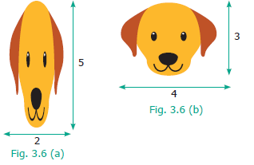
Do you observe any change in shape and size of the picture? Check whether the ratios formed by its length and breadth are in proportion by cross product method.
Solution
The given pictures are in the ratio 2 is to 5 and 4 is to 3 respectively.
Here the extremes are 2 and 3 and the means are 5 and 4.
Product of extremes, a d is equal to 2 in to 3 is equal to 6.
Product of means, b c is equal to 5 into 4 is equal to 20.
Thus, we find a d is not equal to b c and hence 2 is to 5 and 4 is to 3 are not in proportion.
TRY THIS
1. Fill in the box by using cross product rule of two ratios 1divided by 8 is equal to 5 divided by box
2. Use the digits 1 to 9 only once and write as many ratios that are in proportion as possible. (For example ) 2 divided by 4 is equal to 3 divided by 6
Finding the value of one unit and then using it to find the value of the required number of units is known as unitary method.
Steps involved in Unitary Method
Example 3.8
Pari wants to buy 5 tennis balls from a sports shop. If a dozen balls cost rupees 180, how much should Pari pay to buy 5 balls?
Solution
By unitary method, we can solve this as follows:
Cost of a dozen balls is equal to rupees180
Cost of 12 balls is equal to rupees 180
Cost of 1 ball is equal to 180 divided by 12 is equal to rupees 15
Cost of 5 balls is equal to 5 into 15 is equal to rupees 75
Hence, Pari has to pay rupees 75 for 5 balls.
Example 3.9
A heater uses 3 units of electricity in 40 minutes. How many units does it consume in 2 hours?
Solution
In 40 minutes, electricity used is equal to 3 units.
In 1 minute, electricity used is equal to 3 divided by 40 units.
In 120 minutes (2 hours), electricity used = 3 divided by 40 into 120 is equal to 9 units
Thus, the heater consumed 9 units of electricity in 2 hours.
Exercise 3.3
1. Fill in the boxes.
1. 3 is to 5 equal proportions box is to 20
2. box is to 24 equal proportions 3 is to 8
3. 5 is to box equal proportions 10 is to 8 equal proportions 15 is to box
4. 12 is to box equal to is to 4 equal to 8 is to 16
2. Say True or False.
1. 7 Persons is to 49 Persons as 11 kilogram is to 88 kilograms
2. 10 books is to 15 books as 3 books is to 15 books
3. If the weight of 40 books is 8 kilograms, then the weight of 15 books is 3 kilograms
4. A car travels 90 kilo meter in 3 hours with constant speed. It will travel 140 kilo meter in 5 hours at the same speed.
3. Fill in the blanks.
1. If the cost of 3 pens is rupees 18, then the cost of 5 pens is dash.
2. If Karkuzhali earns rupees 1800 in 15 days, then she earns rupees 3000 in dash days.
4. Find whether 12, 24, 18, 36 are in order that can be expressed as two ratios that are in proportion.
5. Write the mean and extreme terms in the following ratios and check whether they are in proportion.
1. 78 litre is to 130 litre and 12 bottles is to 20 bottles
2. 400 grams is to 50 grams and 25 rupees is to 625 rupees
6. The America’s famous Golden Gate bridge is 6480 feet long with 756 feet tall towers. A model of this bridge exhibited in a fair is 60 feet long with 7 feet tall towers. Is the model, in proportion to the original bridge?
7. If a person reads 20 pages of a book in 2 hours, how many pages will he read in 8 hours at the same speed?
8. Cholan walks 6 kilometres in 1 hour at constant speed. Find the distance covered by him in 20 minutes at the same speed.
9. The number of correct answers given by Kaarmugilan and Kavitha in a quiz competition are in the ratio 10 is to 11. If they had scored a total of 84 points in the competition, then how many points did Kavitha get?
10. Karmegan made 54 runs in 9 overs and Asif made 77 runs in 11 overs. Whose run rate is better? (run rate is equal to ratio of runs to overs)
11. You purchase 6 apples for rupees 90 and your friend purchases 5 apples for rupees 70. Whose purchase is better?
Objective Type Questions
12. Which of the following ratios are in proportion?
(a) 3 is to 5, 6 is to 11
(b) 2 is to 3, 9 is to 6
(c) 2 is to 5, 10 is to 25
(d) 3 is to 1, 1 is to 3
13. If the ratios formed using the numbers 2, 5, x, 20 in the same order are in proportion, then ‘x’ is
(a) 50
(b) 4
(c) 10
(d) 8
14. If 7 is to 5 is in proportion to x is to 25, then ‘x’ is
(a) 27
(b) 49
(c) 35
(d) 14
15. If a barbie doll costs rupees 90, then the cost of 3 such dolls is rupees dash.
(a) 260
(b) 270
(c) 30
(d) 93
16. If a man walks 2 kilo meter in 15 minutes, then he will walk dash kilo meter in 45 minutes.
(a) 10
(b) 8
(c) 6
(d) 12
Exercise 3.4
Miscellaneous Practice Problems
1. The maximum speed of some of the animals are given below :
the Elephant = 20 kilo meter per hour ; the Lion = 80 kilo meter per hour; the Cheetah = 100 kilo
meter per hour. Find the following ratios of their speeds in simplified form and find which ratio is
the least?.
1.the Elephant and the Lion
2.the Lion and the Cheetah
3.the Elephant and the Cheetah
2. A particular high school has 1500 students 50 teachers and 5 administrators. If the school grows to 1800 students and the ratios are maintained, then find the number of teachers and administrators.
3. I have a box which has 3 green, 9 blue, 4 yellow, 8 orange-coloured cubes in it.
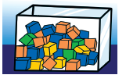
(a) What is the ratio of orange to yellow cubes?
(b) What is the ratio of green to blue cubes?
(c) How many different ratios can be formed, when you compare each colour to anyone of the other colours?
4. A gets double of what B gets and B gets double of what C gets. Find A is to B and B is to C and verify whether the result is in proportion or not.
5. The ingredients required for the preparation of Ragi Kali, a healthy dish of Tamil Nadu is given below.
Ingredients |
Quantity |
Ragi flour |
4 cups |
Raw rice broken |
1 cup |
Water |
8 cups |
Sesame oil |
15 milli litre |
Salt |
10 milligrams |
(a) If one cup of ragi flour is used then, what would be the amount of raw rice required?
(b) If 16 cups of water is used, then how much of ragi flour should be used?
(c) Which of these ingredients cannot be expressed as a ratio? Why?
Challenging Problems
6. Antony brushes his teeth in the morning and night on all days in a week. Shabeen brushes her teeth only in the morning. What is the ratio of the number of times they brush their teeth in a week?
7. Thirumagal's mother wears a bracelet made of 35 red beads and 30 blue beads. Thirumalgal wants to make smaller bracelets using the same two coloured beads in the same ratio. In how many different ways can she make the bracelets?
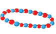
8. Team A wins 26 matches out of 52 matches. Team B wins three-fourth of 52 matches played. Which team has a better winning record?
9. In a school excursion, 6 teachers and 12 students from 6th standard and 9 teachers and 27 students from 7th standard, 4 teachers and 16 students from 8th standard took part. Which class has the least teacher to student ratio?
10. Fill the boxes using any set of suitable numbers 6 is to box equal proportion to box is to 15.
11. From your school diary, write the ratio of the number of holidays to the number of working days in the current academic year.
12. If the ratio of Green, Yellow and Black balls in a bag is 4 is to 3 is to 5, then
(a) Which is the most likely ball that you can choose from the bag?
(b) How many balls in total are there in the bag if you have 40 black balls in it?
(c) Find the number of green and yellow balls in the bag.
ICT Corner
RATIO AND PROPORTION
Expected Result is shown in this picture
Step – 1
Open the Browser, Copy and paste the link given below (or) by type the URL given (or) Scan the QR Code.
Step - 2
GeoGebra worksheet named “Ratio and Proportion” will open. Two sets of Coloured beads will appear.
Step-3
Find the ratio of coloured beads for each pair. You can Increase or decrease the no’s by pressing “plus” and “minus “button appearing on the right side of the page.
Step-4
To check your answer Press on “Pattern 1” and “Pattern 2” button. Repeat the test by increasing and decreasing the beads.
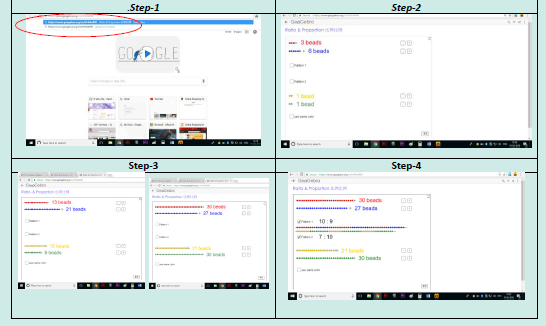
Browse in the link Ratios: - https://www.geogebra.org/m/fcHk4eRW
Learning Objectives
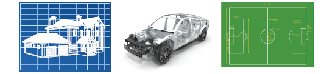
Geometry means the measurement of the earth. It includes the study of the properties of shapes and its measures. In ancient days, geometry was developed for the practical purpose of construction, surveying and various crafts.
Nature evolves out of simple geometrical shapes and patterns from tiny atoms to huge galaxies. The objects that you see in your environment have an impact of geometrical ideas. An appealing appearance of houses and buildings are made possible by geometrical thinking. Vehicles like cycle, car, bus are designed using geometrical concepts. The toys that you play with, the tools like pencil, scale and book that you use with, give rise to geometrical ideas and shapes.
In this chapter, we will learn about the geometrical concepts such as lines, line segments, rays and angles.
MATHEMATICS ALIVE – NATURE’S GEOMETRIC MASTERPIECES
Hexagon in Honey Comb
Art of Geometric Patterns
What shapes can you draw with 3 lines or 4 lines or 5 lines?
We have already seen some shapes with names like triangles, rectangles and squares.
Here is a shape which is in the form of a fish (see Figure. 4.1).
It has 5 lines. Can you draw a fish with 4 lines or with 3 lines? Think!
What shapes can you draw with only TWO lines?
The following forms are possible with 2 lines. Isn’t it?
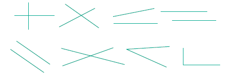
Is there something you notice in all these shapes?
What shapes can be drawn with only ONE line? The line may be standing upright, lying flat, or slanting. Perhaps it can be, slant left or slant right. It may be long or short.
Now, consider the following situation.
The teacher gives Yazhini a paper with a line drawn on it and asks Akilan to draw the same line on the black board, as instructed by Yazhini. Then they shall reverse the process. They do the same with other shapes using 2 lines and 3 lines. Try doing this and say, whether this is easy to do!
Observe the following conversation.
Teacher: Sakthi, can you say how to draw lines?
Sakthi: Yes Teacher! Why only lines? I may like to draw curves and circles too!
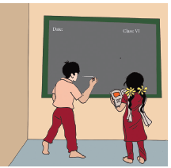
Teacher: Sakthi, you can do all the shapes you like. But you see, there is enough difficulty in describing shapes made only of lines. So, we will get to curves and circles later.
Sakthi: Teacher, Why should we describe shapes? We can just draw and show them when we want.
Is Sakthi right?
In Mathematics, every thinking is interesting and unlimited. Remember numbers; it is not stopped with adding 2 – digits. Numbers go on endlessly and it is possible to add any two numbers, however large. We know that even a 37- digit number ending in 0 is divisible by 5.
It is the same with shapes too. We are interested in lines, triangles, rectangles and in whatever the shapes may be and the size however large or small. We need to give them names not only to describe them but also to explore a lot with them.
A line can be long or short. A line can be flat or slant or vertical. If a line is rotated in any direction, it remains to be a line. So, given below (Figure 4.3) are lines in different positions.
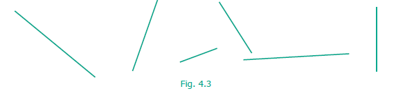
But the following (Figure 4 point 4) are not straight lines.
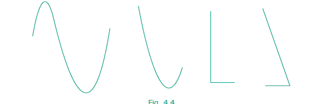
If the length of a line is ignored, then it can be extended in both the directions without ending as in (Figure 4 point 5) given below. A line through two points A and B is written as A B or B A . Also it is denoted by a letter ‘ l ’.
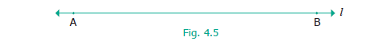
What do we call a line that is short and ends on both sides? That we call it as a line segment and name both of its ends with letters as shown in figure 4.6.
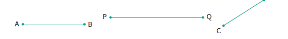
We usually use CAPITAL LETTERS to denote the ends of the line segments. A line segment is denoted by A B bar . What can we do with a line segment? We can measure its length. Given two line segments, we can compare their lengths and say which is shorter and which is longer.
Even if we measure length as a number, we get lots of line segments, each with a definite length. Using a ruler, we can draw the following line segments.
1 centimetres A line segments B
2 centimetres A line segments B
3 centimetres A line segments B
Exceedra
10 centimetres A line segments B
What about a line segment of length 17 centimetres or 20 centimetres or 30 centimetres or 378 centimetres? Like, numbers never end, line segments get longer and longer forever!
TRY THIS
Name all the line segments.
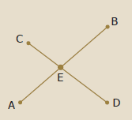
Learn to measure line segments using the ruler.
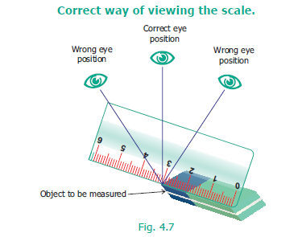
Examples of Measuring Line Segments
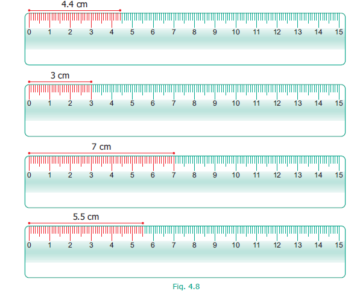
Box item begin
TRY THIS
If AB = 5 centimetres, say which of the measures are correct in figure. 4.9.
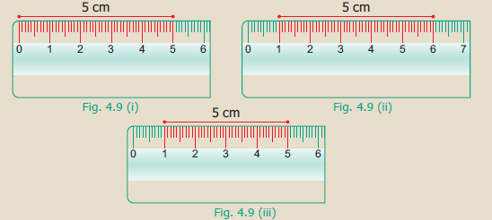
Box item end
Box item begin
Do you know?
Geometry originated from two Greek words, geo, meaning earth and metron meaning measure. Geometry means earth measure. Around 600 B.C.(BCE), Thales of Miletus was the first to use deductive methods to develop geometric concepts. The Greek Mathematician, Pythagoras continued the systematic development of Geometry.
Box item end
Example 4.1
With the help of a ruler and compass, draw a line segment P Q = 5.5 centimetres.
Solution
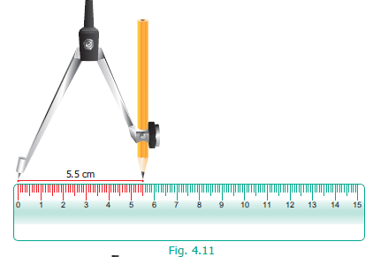
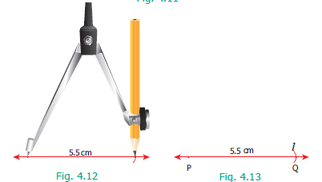
Box item begin
ACTIVITY
This game can be played in small groups. Take 10 or more sticks of equal length. Join them as a bundle and put them on the floor in such a way that they fall one above the other. The challenge is to take one stick after other without disturbing the position of the other sticks.
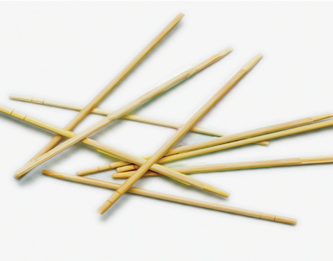
Box item end
Box item begin
ACTIVITY
Box item end.
Now let us get back to two lines (Figure 4.14). Lines that go on forever on either side without meeting each other (that is they have a constant distance in between) are called parallel lines.
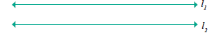
Thus, parallel lines go forever without meeting.
What will happen if two lines are not parallel?
Then they must meet somewhere! Of course, they go their way after meeting too.
Images of two intersecting lines are given here
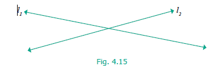
Here, l 1 and l 2 are called intersecting lines.
Of course, we now have parallel line segments and intersecting line segments too.
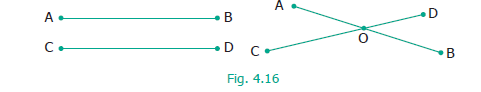
The position ‘O’ at which the line segments A B whole bar and C D whole bar meet is called their point of intersection.
Box item begin
ACTIVITY
Take a piece of paper and fold in as many ways as you can, which generates parallel lines or intersecting lines.
A few examples are shown for you.
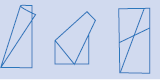
Box item end.
Box item begin
A line has no end points, whereas a line segment has end points. We can measure the length of a line segment.
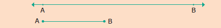
Box item end.
What about lines that end on one side but proceed indefinitely on the other side? We call them rays. They are denoted by A B whole bar ,P Q whole bar, M N whole bar etcetera. The fixed end point of a ray is called the starting point. (See figure.4.17)
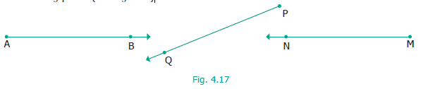
With two rays we have more to learn. They can be parallel or intersecting
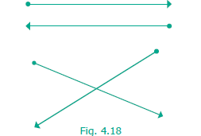
Two rays may have the same starting point.
TRY THIS
Exercise 4.1
1. Fill in the blanks.
1. A line through two end points ‘A’ and ‘B’ is denoted by dash.
2. A line segment from point ‘B’ to point ‘A’ is denoted by dash.
3. A ray has dash end point(s).
2. How many line segments are there in the given line? Name them.
3. Measure the following line segments.
4. Construct a line segment using ruler and compass.
1. A B = 7.5 centimetres
2. C D = 3.6 centimetres
3. Q R = 10 centimetres
5. From the given figure, name the
1. parallel lines
2. intersecting lines
3. points of intersection.
6. From the given figure, name
1. all pairs of parallel lines.
2. all pairs of intersecting lines.
3. pair of lines whose point of intersection is ‘V’.
4. point of intersection of the lines ‘ l 2 ’ and ‘l 3’.
5. point of intersection of the lines ‘l 1’ and ‘l 5’.
Objective Type Questions
7. The number of line segments in is
(a) 1
(b) 2
(c) 3
(d) 4
8. A line is denoted as
(a) A B
(b) ray A B
(c) line A B
(d) line segment A B
Can we find a way to describe all these shapes? (shown in figure 4.20)
Box item begin
NOTE
We can do the same with two line segments also. See the figures given below.
Box item end
How would you describe whether a ray (or line segment) is vertical or slanting with respect to another ray (or line segment)?
Box item begin
Do you know?
Carrom board involves many geometric concepts like line segments and angles. When the striker hits the coin, the coin moves in a straight line. When the striker or coins hit the board end they make angles with the board while returning.
Box item end.
When two rays or line segments meet at their end points, they form an angle at that point.
In the Figure.4.21 rays A B and A C are the sides and ‘A’ is the vertex which is the meeting point of both the line segments.
We name the angle as shown in the Figure 4.22 below.
Figure 4.22
1.shows the angle ∠P Q R; ray Q P, ray Q R are its sides. 'P' is on Q P; 'R' is on QR.
Figure 4.22
2. shows the angle ∠A B C; B A, BC are its sides. 'A' is on B A; 'C' is on BC.
We name the angle in figure. 4.22
1. as angle ∠Q or angle ∠P Q R or angle ∠ R Q P. Similarly, in Figure. 4.22
2. we may write angle ∠B as angle ∠A B C or angle ∠C B A.
In the Figure 4.23, two angles are marked. Note that angle ∠B A C is not the same as angle ∠ A B C, as they have different vertices and different sides
Can we measure angles too? Yes, using protractor they are measured in degrees which are denoted by the symbol ‘ º ’. This has to be marked at top right of a number. We write angles as 35°, 78°, 90°, 110°, 145° and so on.
See that angles can be equal even if they are positioned differently.
Some angles are special. 90° is one such. We call it as the right angle.
Right angle is most common in life. Examples can be seen at cross-roads, chess board, TV, Exceedra.
Acute Angles
Each of the angles in the above Figure 4.26 is less than a right angle. Angles smaller than 90º are called Acute angles.
Obtuse Angles
Each of the angles in the above Figure 4.27 is greater than right angle. If an angle is more than 90degree and less than 180° is called an obtuse angle.
ACTIVITY
Stand facing the north side. Take a ‘right angle turn’ clockwise; you now face east. Again take another ‘right angle turn’ in the same direction. You now face south. Once again take another ‘right angle turn’ in the same direction. You now face west. Then follow the same you will come to the original position. Thus the complete turn is called one revolution. The turn from north to south will be two right angles. It is also called a straight angle. Two straight angles make one complete revolution. This is illustrated in the following figures.
TRY THESE
1. Which direction will you face if you start facing West and take three right turns clockwise?
2. Which direction will you face if you start facing North and take two right turns anti-clockwise?
How do we measure an angle? Using a PROTRACTOR we can measure an angle.
A protractor has one centre and a base line. It has two scales namely, inner scale from 0° to 180° in anti clockwise direction and outer scale from 0° to 180° in the clockwise direction. Why does the protractor stop with 180°? We can rotate the protractor and measure, so 180° is enough.
Steps To Measure an angle
Step 1: Place the centre of the protractor on the vertex of the angle and line up the base line with 0°.
Step 2: Read the measure where the other ray crosses the protractor.
Example 4.2
Use a Protractor to draw an angle 90 degree.
Place the center of the protractor at the vertex P. Line up the ray P Q with the 0° line. Then draw and label a point (R) at the 90° mark on the inner scale (anticlockwise)
Place the center of the protractor at the vertex P. Line up the ray P Q with the 0° line. Then draw and label a point (R) at the 90° mark on the outer scale (clockwise).
Remove the protractor and draw P R to complete the angle. Now, angle ∠P = angle ∠Q P R = angle ∠R P Q =90°
Remove the protractor and draw P R to complete the angle. Now, angle ∠P = angle ∠Q P R = angle ∠R P Q =90°
Example 4.3
Use a Protractor to draw an angle 45°.
Place the centre of the protractor at the vertex P. Line up the ray P Q with the 0º line. Then draw and label a point (R) at the 45° mark on the inner scale (anticlock wise)
Place the centre of the protractor at the vertex P. Line up the ray P Q with the 0º line. Then draw and label a point (R) at the 45° mark on the outer scale (clock wise)
Remove the protractor and draw PR to complete the angle.
Now, angle ∠P = angle ∠Q P R = angle ∠R P Q =120°
Remove the protractor and draw P R to complete the angle.
Now, angle ∠P = angle ∠Q P R = angle ∠R P Q =120°
Example 4.4
Use a protractor to draw an obtuse angle 120°.
Place the centre of the protractor at the vertex P. Line up the ray P Q with the 0° line. Then draw and label a point (R) at the 120° mark on the inner scale (anti clock wise)
Remove the protractor and draw PR to complete the angle.
Now, angle ∠P = angle ∠QPR = angle ∠RPQ =120°
Place the centre of the protractor at the vertex P. Line up the ray P Q with the 0° line. Then draw and label a point (R) at the 120° mark on the outer scale (clock wise)
Remove the protractor and draw PR to complete the angle.
Now, angle ∠P = angle ∠QPR = angle ∠RPQ =120°
Box item begin
Do you know?
Reflex angles are bigger than 180°. Always subtract the given angle from 360° to get the reflex angle.
Box item end.
Fix a line segment A B and let’s have another line segment A C, go on rotating line segment A C to the left.
In this rotations, At some point A C overlap A B and then we are back to the same as before. So angle, keep on increasing and after some point, return to 0º.
Is this familiar? Yes, you can see this in a clock!
Box item begin
TRY THIS
Adjust the hands of the clock for the following time, note the angle made between the hour hand and the minute hand and write the type of angle.
12.10 Acute angle |
12.40 Acute angle |
3.25 Acute angle |
9.40 Acute angle |
5.55 Acute angle |
1.25 Acute angle |
4.25 Acute angle |
7.05 Acute angle |
Box item end
If ‘C’ is exactly on the opposite side ‘B’, with vertex ‘A’ in the middle. Then the angle is 180°. It is called the Straight angle
Two angles are complementary to each other if they add up to 90° [See Figure. 4.28.1 ]
Two angles are supplementary to each other if they add up to 180° [See Figure. 4.28.2]
In the above figures, 20° and 70° are complementary angles and 147° and 33° are supplementary angles. But 35° and 75° are neither complementary nor supplementary.
Exercise 4 point 2
1. Use any number of the given dots to make different angles.
1) An Acute Angle
9 dot image given here
2) An Obtuse Angle
9 dot image given here
3) A Right Angle
9 dot image given here
4) A Straight Angle
2. Name the vertex and sides that form each angle
Vertex dash.
Sides dash.
Vertex dash.
Sides dash.
3. Pick out the Right angles from the given figures.
4. Pick out the Acute angles from the given figures.
5. Pick out the Obtuse angles from the given figures.
6. Name the angle in each figure given below in all the possible ways.
7. Say True or False.
1. 20° and 70° are complementary.
2. 88° and 12° are complementary.
3. 80° and 180° are supplementary.
4. 0° and 180° are supplementary.
8. Draw and label each of the angles.
1. angle ∠N A S = 90°
2. angle ∠B I G = 35°
3. angle ∠S M C = 145°
4. angle ∠A B C = 180°
9. Identify the types of angles shown by the hands of the given clock.
10. Find the complementary angle of
1. 30 degree
2. 26 degree
3. 85 degree
4. 0 degree
5. 90 degree
11. Find the supplementary angle of
1. 70 degree
2. 35 degree
3. 165 degree
4. 90 degree
5. 0 degree
12. Find the supplementary or complementary angles in each case.
Objective Type Questions
13. In this Figure, which is not the correct way of naming an angle?
(a) angle ∠ Y
(b) angle ∠ Z X Y
(c) angle ∠ Z Y X
(d) angle ∠ X Y Z
14. In this Figure, angle ∠ A Y Z = 45°. If point ‘A’ is shifted to point ‘B’ along the ray, then the measure of angle ∠ B Y Z is dash.
(a) more than 45°
(b) 45°
(c) Less than 45°
(d) 90°
When we have a line, we can mark a point on the line or not on it.
‘A’ is on ‘l 1’, ‘B’ is not on ‘l 1’ or ‘l 2’. ‘B’ may be closer or far away, but not on the both of the lines ‘l 1’ and ‘l 2’. However, when any two points are given, there is exactly ONE line passing through them! Take several pairs of points and verify if this is true. What about 3 points and a line? Consider the following lines ‘l 1’ ‘l 2’ ‘l 3’ and ‘l 4’ and A,B,C be three points.
When all the three points are on a line, they are special; we call such points as collinear points. When two lines intersect at right angles (90°), we call them as perpendicular lines. (Refer to 4.31)
ACTIVITY
A book is an object where you can see parallel, perpendicular and intersecting lines.
Suggest atleast 2 more examples having parallel, perpendicular and intersecting lines.
Two intersecting lines cut at a point. Will three lines intersect at one point? Figure.4.32 will help you to answer this.
When many lines intersect at a single point, that is again special, we call that point P as a point of concurrency. The lines are called concurrent lines.
Exercise 4.3
1. Observe the diagram and fill in the blanks.
1. ‘A’, ‘O’ and ‘B’ are dash points.
2. ‘A’, ‘O’ and ‘C’ are dash points.
3. ‘A’, ‘B’ and ‘C’ are dash points.
4. dash is the point of concurrency
2. Draw any line and mark any 3 points that are collinear.
3. Draw any line and mark any 4 points that are not collinear.
4. Draw any 3 lines to have a point of concurrency.
5. Draw any 3 lines that are not concurrent. Find the number of points of intersection.
Objective Type Questions
6. A set of collinear points in the figure are dash.
(a) A, B, C
(b) A, F, C
(c) B, C, D
(d) A, C, D
7. A set of non-collinear points in the figure are dash.
(a) A, F, C
(b) B, F, D
(c) E, F, G
(d) A, D, C
8. A point of concurrency in the figure is dash.
(a) E
(b) F
(c) G
(d) H
Exercise 4.4
Miscellaneous Practice Problems
1. Find the type of lines marked in thick lines (Parallel, intersecting or perpendicular)
2. Find the parallel and intersecting line segments in the picture given below.
3. Name the following angles as shown in the figure.
1. Angle 1 equal to
2. Angle 2 equal to
3. Angle 3 equal to
4. Angle 1plus Angle 2 equal to
5. Angle 2 plus Angle 3 equal to
6. Angle 1 + Angle 2 + Angle 3 equal to
4. Measure the angles of the given figures using protractor and identify the type of angle as acute, obtuse, right or straight.
5. From the figures given below, classify the following pairs of angles into complementary and non complementary.
6. From the figures given below, classify the following pairs of angles into supplementary and non supplementary.
7. From the figure
1. name a pair of complementary angles
2. name a pair of supplementary angles
Challenging Problems
8. Think and write an object having
Parallel lines
(1) dash
(2) dash
(3) dash
Perpendicular lines
(1) dash
(2) dash
(3) dash
Intersecting lines
(1) dash
(2) dash
(3) dash
9. Which angle is equal to twice its complement?
10. Which angle is equal to two-third of its supplement?
11. Given two angles are supplementary and one angle is 20 degree more than other. Find the two angles.
12. Two complementary angles are in ratio 7is to 2. Find the angles.
13. Two supplementary angles are in ratio 5 is to 4. Find the angles.
Summary
ICT Corner
GEOMETRY
Expected Result is shown in this picture
Step – 1 Open the Browser, copy and paste the link given below (or) by type the URL given (or) Scan the QR Code.
Step - 2 GeoGebra Work Book called “Measuring Angles Using Protractor” will appear. An angle and a Protractor will appear.
Step-3 Drag the protractor and place it on the angle and measure it.
Now Click on the “Answer” Box to check whether your measurement is correct.
Click on “Random” button to create new angle and continue l you understand how to measure the angle.
Browse in the link Measuring Angles: https://www.geogebra.org/m/fMnsdbzv
Learning Objectives
Recap
Object |
Number of Objects |
Ball |
8 |
Bat |
dash |
Funnel |
dash |
Square |
dash |
From the given Figure and the table, answer the following questions.
1. The total number of objects in the above picture is dash.
2. The difference between the number of squares and the number of bats is dash.
3. The ratio of the number of balls to the number of bats is dash.
4. What are the objects equal in number?
The Headmaster of a school (see Figure 5.1) wanted to open Saving Bank accounts for his students. For this, he needed data from his students. Students did not understand the meaning of the word ‘data’. Do you know what it means? Data means, "collection of information about anything". Data is collected, measured and analyzed, whereupon it can be visualized using graphs or images. In this case, the details could consist of information like the ration card number with address, the name of the student, Aadhaar card identity number, date of birth, phone number for communication execetra. These are preserved for drawing inferences.
Name of the student D. Nallathambi |
Aadhaar Number dash |
Date of birth dash |
Phone Number dash |
MATHEMATICS ALIVE – STATISTICS IN REAL LIFE
Population census
Wickets taken by the bowler in last 5 matches
In our daily life, we come across many situations where we need to collect information in the form of Facts or Numbers.
For example,
Thus, the numerical information or facts collected are known as Data.
Box item begin
Do you know?
The word ‘data’ was first used in 1640’s. In 1946, the word ‘data’ also meant for “transmittable and storable computer information”. In 1954, a term called ‘data processing’ was introduced. The plural form of ‘datum’ is ‘data’. It also means “given” or “to give” in Latin.
Box item end
Santhi collected the following information about her friend's preference of sweets which is as shown below
Friend's name |
Sweet preferred |
Friend's name |
Sweet preferred |
Vetri |
Sweet preferred Gulabjamun |
Sadaiyan |
Sweet preferred Laddu |
Kurinji |
Sweet preferred Laddu |
Rafiq |
Sweet preferred Gulabjamun |
Mullai |
Sweet preferred Cake |
Francis |
Sweet preferred Laddu |
Madhavi |
Sweet preferred Gulabjamun |
Vetriselvi |
Sweet preferred Laddu |
Pegan |
Sweet preferred Cake |
Mary |
Sweet preferred Gulabjamun |
Rahim |
Sweet preferred Laddu |
Fathima |
Sweet preferred Laddu |
Nawaz |
Sweet preferred Cake |
Raju |
Sweet preferred Cake |
Siva |
Sweet preferred Gulabjamun |
Robert |
Sweet preferred Gulabjamun |
Joseph |
Sweet preferred Laddu |
Kalai |
Sweet preferred Cake |
Tamil |
Sweet preferred Gulabjamun |
Anbu |
Sweet preferred Kesari |
Malar |
Sweet preferred Laddu |
Thamarai |
Sweet preferred Gulabjamun |
Velan |
Sweet preferred Kesari |
Mariya |
Sweet preferred Laddu |
Malarkodi |
Sweet preferred Cake |
Manimozhi |
Sweet preferred Kesari |
Selvi |
Sweet preferred Gulabjamun |
Mubina |
Sweet preferred Gulabjamun |
Arivu |
Sweet preferred Laddu |
Kottravai |
Sweet preferred Gulabjamun |
This way of collecting the data helps Santhi to decide, what sweets to get for her birthday and how much for each.
Box item begin
TRY THESE
Box item end
Box item begin
ACTIVITY
Collect the data of the birth months of your classmates.
Box item end
On the basis of collection, data are of two types. They are primary data and secondary data.
Primary data
Primary data means the raw data (not tailored data) which has just been collected from the original source and has not gone any kind of statistical treatment like sorting and tabulation
Examples
Box item begin
ACTIVITY
Box item end
Secondary Data
Secondary data consists of second hand information which has already been collected. It could have been collected by someone other than the user, for some other purpose.
Examples
Box item begin
Do you know?
Box item end.
The collected data are to be arranged methodically or logically so that the information can be looked up fast whenever needed, easily and efficiently. The method of organizing the data is discussed as follows.
Sweet |
Marks |
Frequency |
Kesari |
3 Tally marks |
Frequency 3 |
Gulabjamun |
11 Tally marks |
Frequency 11 |
Laddu |
10 Tally marks |
Frequency 10 |
Cake |
6 Tally marks |
Frequency 6 |
But, Rahim arranges the data as shown below.
Sweet |
Tally Marks |
Frequency |
Kesari |
Tally marks 3 |
Frequency 3 |
Gulabjamun |
Tally marks 5 , 5 ,1 |
Frequency 11 |
Laddu |
Tally marks 5 ,5 |
Frequency 10 |
Cake |
Tally marks 5, 1 |
Frequency 6 |
See that, it does not matter whether you use ‘tik mark’ or ‘|’.
One One vertical line |
Two Two vertical line |
Three Three Vertical line |
Four Four vertical line |
Five Four vertical line by striking through the previous four vertical lines |
As in the above table, the teacher arranges the data as follows:
Sweet |
Tally Marks |
Frequency |
Kesari |
Tally marks 3 |
Frequency 3 |
Gulabjamun |
Tally marks 5 plus 5 plus 1 |
Frequency 11 |
Laddu |
Tally marks 5 plus 5 |
Frequency 10 |
Cake |
Tally marks 5 plus 1 |
Frequency 6 |
The standard form of representing the data is obtained by using ‘Tally marks’.
This looks so much easier to read now.
Example 5.1
Thamarai is fond of reading books. The number of pages read by her on each day during the last 40 days are given below. Make a Tally Marks table.
1 3 5 6 6 4 3 5 4 1 6 2 5 3 4 1 6 6 5 5 1
1 2 3 2 5 4 2 4 1 6 2 5 5 6 5 5 3 5 2 5 1
Solution
The Tally marks table is given below.
Number of pages |
Tally Marks |
Frequency |
Page number 1 |
Tally marks 5 plus 2 |
Frequency 7 |
Page number 2 |
Tally marks 5 plus 1 |
Frequency 6 |
Page number 3 |
Tally marks 5 |
Frequency 5 |
Page number 4 |
Tally marks 3 |
Frequency 3 |
Page number 5 |
Tally marks 5 plus 5 plus 2 |
Frequency 12 |
Page number 6 |
Tally marks 5 plus 2 |
Frequency 7 |
|
Total |
40 |
Box item begin
THINK
If someone asks, “typically, how many pages does Thamarai read in one day?”, what will be your answer?
Box item end
Exercise 5.1
1. Fill in the blanks.
1. The collected information is called dash.
2. An example of a Primary Data is dash.
3. An example of a Secondary Data is dash.
4. The tally marks for number 8 in standard form is dash.
2. Viji threw a die 30 times and noted down the result each time as follows. Prepare a table on the numbers shown using Tally Marks.
1 |
4 |
3 |
5 |
5 |
6 |
6 |
4 |
3 |
5 |
4 |
5 |
6 |
5 |
2 |
4 |
2 |
6 |
5 |
5 |
6 |
6 |
4 |
5 |
6 |
6 |
5 |
4 |
1 |
1 |
3. The following list tells colours liked by 25 students. Prepare a table using Tally Marks.
Red |
Blue |
White |
Grey |
White |
Green |
Grey |
Blue |
Green |
Grey |
Blue |
Grey |
Red |
Green |
Red |
Blue |
Blue |
Green |
Blue |
Green |
Grey |
Grey |
Green |
Grey |
Red |
4. The following are the marks obtained by 30 students in a class test out of 20 in Mathematics subject.
11 |
12 |
13 |
12 |
12 |
15 |
16 |
17 |
18 |
12 |
20 |
13 |
13 |
14 |
14 |
14 |
15 |
15 |
15 |
15 |
16 |
16 |
16 |
15 |
14 |
13 |
12 |
11 |
19 |
17 |
Prepare a table using Tally Marks.
5. The table shows the number of calls recorded by a Fire Service Station in one year.
Types of Calls |
Tally Marks |
Frequency |
Building Fires |
Tally Marks 5 plus 1 |
Frequency dash |
Other Fires |
Tally Marks 5 plus 5 plus 1 |
Frequency dash |
Hazardous Materials |
dash |
Frequency 7 |
Rescues |
dash |
Frequency 4 |
False Alarms |
Tally Marks 5 plus 2 |
Frequency dash |
Total |
dash |
Frequency dash |
Complete the table and answer the following questions.
1. Which type of call was recorded the most?
2. Which type of call was recorded the least?
3. How many calls were recorded in all?
4. How many calls were recorded as False Alarms?
Objective Type Questions
6. The tally marks for the number 7 in standard form is dash.
(a) 7
(b) 4 lines one cross lines 2 lines
(c)7 tick marks
(d) 6 lines one cross lines
7. The tally marks 9 represents the number count
(a) 5
(b) 8
(c) 9
(d) 10
The teacher was discussing about the pollution caused by the vehicles. The students said that they saw many vehicles when they were standing in the bus stop while coming to school. Everyone described in their own way, but Azhagi drew the pictures of the vehicles that she had seen, as shown below.
All the students were able to easily understand that Azhagi had seen 5 cars, 3 lorries and 2 buses. This sort of representation of data using pictures is called Pictograph.
Nowadays pictographs are frequently used in promotion of tourism, weather forecast, geography Exceedra.
Advantages of using Pictograph
Box item begin
NOTE
A pictograph is the representation of data through pictures.
Do you know?
Box item end
Figure. 5.3 shows, a fruit stall where there are 40 mangoes, 55 apples, 35 oranges and 60 bananas. How can we represent this data by using pictures? If the data is very large, it is very difficult and time consuming to represent each of the fruits in a pictograph. In such cases, we can use one picture to represent many of the same kind. This is called scaling.
Consider the above data of fruits. 40 and 60 are multiples of 10, while 55 and 35 are multiples of 5. Let us assume, that One full picture of fruit represents 10 fruits and One half picture represents 5 fruits.
The pictograph can be drawn for the above data as shown in the table.
From the above pictograph the number of fruits can be calculated very easily.
Number of Mangoes = 4 full pictures implies 4 × 10 = 40 mangoes
Number of Apples = 5 full pictures and 1 half picture implies (5 x 10) + 5 = 55 apples
Number of Bananas = 6 full pictures implies 6 × 10 = 60 bananas
Number of Oranges = 3 full pictures and 1 half picture implies (3 x 10) + 5 = 35 oranges
Example 5.2
The following table shows the number of vehicles sold in a year.
Key : One picture represents 10 vehicles
Look at the pictograph and answer the following questions.
1. How many motor cycles were sold in a year?
2. Number of buses sold in a year is 20. Say True or False.
3. How many bicycles were sold?
4. How many cars and vans were sold?
5. How many vehicles were sold altogether?
Solution
Given : 1 picture represents 10 vehicles
1. There were 9 × 10 = 90 motor cycles sold.
2. True.
3. There were 4 × 10 = 40 bicycles sold.
4. There were 7 cars and 3 vans pictures. Therefore 70 + 30 = 100 cars and vans sold.
5. There were 7 cars, 3 vans, 9 motor cycles, 2 buses and 4 bicycles sold. Therefore, 70 + 30 + 90 + 20 + 40 = 250 vehicles sold.
Box item begin
Activity
Collect from class VI students data regarding games they like and then draw a pictograph for the data collected.
Box item end.
Exercise 5.2
1. Fill in the blanks.
1. If represents 100 balls then represents dash balls.
2. If 200 is represented by then 600 is represented by dash.
3. Representation of data by using pictures is known as dash.
2. Draw a pictograph for the given data.
Month Number of Computers sold |
June 300 |
July 450 |
August 600 |
September 550 |
(Choose your own suitable scale)
3. The following table shows the number of tourists who visited the places in the month of May. Draw a pictograph
Place Number of Tourists |
Mahabalipuram 20,000 |
Vedanthangal 15,000 |
Hogenakkal 40,000 |
Ooty 35,000 |
(Choose your own suitable scale)
4. The following Pictograph shows the number of students playing different games in a school
Represents 10 students
Answer the following questions.
1. Which is the most popular game among the students?
2. Find the number of students playing Kabaddi.
3. Which two games are played by equal number of students?
4. What is the difference between the number of students playing Kho-Kho and Hockey?
5. Which is the least popular game among the students?
Objective Type Questions
5. The representation of ‘one picture to many objects’ in a Pictograph is called dash.
(a) Tally mark
(b) Pictoword
(c) Scaling
(d) Frequency
6. A Pictograph is also known as dash.
(a) Pictoword
(b) Pictogram
(c) Pictophrase
(d) Pictograft
Ragavi’s father is a mobile shop owner. She finds the following data of sale of mobiles in a week.
Day |
Number of Mobiles Sold |
Sunday |
50 Mobiles Sold |
Monday |
45 Mobiles Sold |
Tuesday |
40 Mobiles Sold |
Wednesday |
20 Mobiles Sold |
Thursday |
35 Mobiles Sold |
Friday |
30 Mobiles Sold |
Saturday |
55 Mobiles Sold |
Yes!
Try this!
What if the number of mobiles be 4, 37 or 305? How many pictures will be used?
For this data instead of pictographs, something different can be used.
Box item begin
NOTE
A Bar graph consists of equally - spaced parallel bars (Horizontal or Vertical) whose lengths or heights are proportional to the number of items given.
Box item end.
Step 1: Draw two lines which are perpendicular to each other. One of them is horizontal and the other one is vertical.
Step 2: A suitable title (Sale of mobiles in a week) is given. The lines are labelled (Horizontal line $ Days of the week; vertical line $ Number of mobiles sold).
Step 3: A suitable scale is chosen. The scale used is stated on the graph.
Step 4: Let the vertical line start from 0 and the values of information are marked at equal distances in same increments.
Step 5: For each information vertical bars are drawn on the horizontal line. They are labelled by respective information (as Monday, Tuesday etc Sunday).
This graph is called as Vertical Bar Graph.
The corresponding horizontal Bar Graph will look like this:
The data from the above Bar Graph (Figure. 5.10) can be easily interpreted and analyzed as follows.
Box item begin
ACTIVITY
Collect different data from Newspapers, Magazines, etc. and interpret them using Bar graphs.
THINK
Why are these important?
Box item end
Example 5.3
Study the above Bar graph and answer the following questions.
1. Which activity is followed by maximum number of students?
2. How many students in all, spend their time on solving puzzles?
3. The total number of students who follow either reading stories or reading their subjects is dash.
4. The activity followed by minimum number of students is dash.
5. The number of students who took part in reading comics is dash.
Solution
1. ‘Reading stories’ is followed by maximum number of students.
2. 7 students spend their time to work out solving puzzles.
3. 8 + 4 = 12 students spend their time on reading stories or subjects.
4. ‘Studying subject’ is followed by minimum number of students.
5. 5 students spend their time on reading comics.
Box item begin
THINK
Can you use
1 unit =1 student?
Justify your answer.
Box item end.
Exercise 5.3
1. Read the given Bar Graph which shows the percentage of marks obtained by Brinda in different subjects in an assessment test.
Observe the Bar Graph and answer the following questions.
1. 1 Unit = Dash % of marks on vertical line.
2. Brinda has scored maximum marks in Dash subject.
3. Brinda has scored minimum marks in Dash subject.
4. The percentage of marks scored by Brinda in Science is Dash.
5. Brinda scored 60% marks in the subject Dash.
6. Brinda scored 20% more in Dash subject than Dash subject.
2. Chitra has to buy Laddus in order to distribute to her friends as follows:
Classes 6 Number of Laddus 70 |
Classes 7 Number of Laddus 60 |
Classes 8 Number of Laddus 45 |
Classes 9 Number of Laddus 80 |
Classes 10 Number of Laddus 55 |
Draw a Bar Graph for this data.
3. The fruits liked by the students of a class are as follows. Draw a Bar Graph for this data.
Fruits Number of students |
Bananas 8 |
Grapes 10 |
Apples 8 |
Mangoes 7 |
Guavas 12 |
Papayas 3 |
Other fruits 2 |
4. The pictograph below gives the number of absentees on different days of the week in class six. Draw the Bar graph for the same.
Objective Type Questions
5. A bar graph can be drawn using dash.
(a) Horizontal bars only
(b) Vertical bars only
(c) Both horizontal bars and vertical bars
(d) Either horizontal bars or vertical bars.
6. The spaces between any two bars in a bar graph dash.
(a) can be different
(b) are the same
(c) are not the same
(d) all of these
Exercise 5.4
Miscellaneous Practice Problems
1. The heights (in centimetres) of 40 children are.
110 |
112 |
112 |
116 |
119 |
111 |
113 |
115 |
118 |
120 |
110 |
113 |
114 |
111 |
114 |
113 |
110 |
120 |
118 |
115 |
112 |
110 |
116 |
111 |
115 |
120 |
113 |
111 |
113 |
120 |
115 |
111 |
116 |
112 |
110 |
111 |
120 |
111 |
120 |
111 |
Prepare a tally marks table.
2. The following pictograph shows the total savings of a group of friends in a year. Each picture represents a saving of Rs.100. Answer the following questions.
![image
5 saving undial picture is given
it has details about the savings of five students one picture of hundi represents rupees 100
five students name and number of hundis are given
in a table first name ruby. Against the name of ruby there are five hundis are given.
second name malarkodi against the name of malarkodi 7 hundies are given
Third name thasnim against the name of thasnim 4 hundis are given
Fourth name kuzhali against the name of kuzhali 5 hundis are given and last name iniya for iniya three hundis are given.](images/image-182.png)
represents Rupees.100
1. What is the ratio of Ruby’s saving to that of Thasnim’s?
2. What is the ratio of Kuzhali’s savings to that of others?
3. How much is Iniya’s savings?
4. Find the total amount of savings of all the friends?
5. Ruby and Kuzhali save the same amount. Say True or False.
3. There are 1000 students in a school. Data regarding the mode of transport of the students is given below. Draw a pictograph to represent the data.
Mode of Travel Number of Students |
On Foot Number of Students 350 |
Bicycle Number of Students 300 |
Scooter Number of Students 150 |
Bus Number of Students 100 |
Car Number of Students 100 |
Challenging Problems
4. The prediction of Weather in the month of September is given below.
Sunday |
Monday |
Tuesday |
Wednesday |
Thursday |
Friday |
Saturday |
|
|
|
|
|
1 sunny |
2 cloudy |
3 cloudy |
4 sunny |
5 partly cloudy |
6 cloudy |
7 rainy |
8 sunny |
9 sunny |
10 partly cloudy |
11 cloudy |
12 partly cloudy |
13 sunny |
14 cloudy |
15 rainy |
16 rainy |
17 rainy |
18 sunny |
19 sunny |
20 sunny |
21 partly cloudy |
22 partly cloudy |
23 cloudy |
24 sunny |
25 cloudy |
26 cloudy |
27 partly cloudy |
28 rainy |
29 sunny |
30 rainy |
1. Make a frequency table of the types of weather by reading the calendar.
2. How many days are either cloudy or partly cloudy?
3. How many days do not have rain? Give two ways to find the answer?
4. Find the ratio of the number of Sunny days to Rainy days.
5. The table shows the number of moons that orbit each of the planets in our solar system.
Planet Number of Moons |
Mercury 0 |
Venus 0 |
Earth 1 |
Mars 2 |
Jupiter 28 |
Saturn 30 |
Uranus 21 |
Neptune 8 |
Make a bar graph for the above data.
6. 26 students were interviewed to find out what they want to become in future. Their responses are given in the following table.
Profession |
Tally marks |
Teacher |
Tally marks 5 plus 2 |
Pilot |
Tally marks 3 |
Bank Manager |
Tally marks 5 |
Doctor |
Tally marks 3 |
Engineer |
Tally marks 5 |
Other Professions |
Tally marks 3 |
Represent this data using Pictograph.
7. Yasmin of class VI was given a task to count the number of books which are biographies, in her school library. The information collected by her is represented as follows.
Observe the pictograph and answer the following questions.
1. Which title has the maximum number of biographies?
2. Which title has the minimum number of biographies?
3. Which title has exactly half the number of biographies as Novelists?
4. How many biographies are there on the title of Sportspersons?
5. What is the total number of biographies in the library?
8. The bar graph illustrates the results of a survey conducted on vehicles crossing over a Toll Plaza in one hour.
Vehicles crossing over a toll plaza
Scale : 1 unit equal to 10 vehicles
Observe the bar graph carefully and fill up the following table.
Vehicles Number of Vehicles |
Buses Number of Vehicles dash |
dash Number of Vehicles 45 |
Cars Number of Vehicles dash |
Vans Number of Vehicles dash |
Dash Number of Vehicles 30 |
Others Number of Vehicles dash |
Total vehicles Number of Vehicles dash |
9. The lengths (in the nearest centimetre) of 30 drumsticks are given as follows.
Lengths |
Number of drumsticks |
Lengths 24 |
Tally marks 5 |
Lengths 25 |
Tally marks dash |
Lengths 26 |
Tally marks dash |
Lengths 27 |
Tally marks 5 plus 1 |
Lengths 28 |
Tally marks dash |
Lengths 29 |
Tally marks 5 plus 3 |
Lengths 30 |
Tally marks 5 plus 1 |
Lengths 31 |
Tally marks 5 |
Draw the bar graph showing the same information.
Summary
ICT Corner
STATISTICS
Expected Result is shown in this picture
Step – 1 Open the Browser, Copy and paste the link given below (or) by type the URL given (or) Scan the QR Code.
Step - 2 GeoGebra worksheet “Tally Mark Addition” will appear. You can generate a new set by clicking “Click here to generate a new set”.
Step - 3 Select “Show Answer” check box to view the answers for the sets.
Step 4: Generate various results and observe the difference in set formaon
Geogebraʼs url : https://www.geogebra.org/m/gzRAnHKw
Alternate source to try tally calculations https://play.google.com/store/apps/details?id=org.geogebra&hl=en
Learning Objectives
Ponmozhi is at her cousin’s wedding which has a large gathering of people. There are a few hundred people, for sure. Suddenly her uncle comes and says, “We are getting ready to serve the meal; one of you quickly count the number of people and tell me”. “Ponmozhi, you are good at counting; Do this quickly and tell to me, I will be inside, getting the plantain leaves ready.”
It will be very tedious to count each and everyone assembled there. Ponmozhi is standing on a chair and is trying to count everyone. Suddenly, Ponmozhi is unsure of the count that she made and she did not want to count the same head more than once.
Ponmozhi was told that the task of counting was not easy. While counting, some people may leave, some may enter and some may move here and there. So it is difficult to make sure that her count would be correct.
Figure 6.1
Figure 6.2
But in a wedding feast it does not matter if there is a small error in the count: Whether there are 384 persons or 417 persons in the hall it does not really make much of a difference. Food made ready for 400 persons can be sufficient for 20 more persons. Mathematics will help not only in exact counting but also in estimation and approximate counting, depending on what is actually needed.
Instead of the above wedding hall situation, counting the number of children in the classroom is very easy. But counting the number of people in the wedding hall is difficult. There are many reasons for this.
The number of children in the classroom is small, in 10s rather than 100s. Children sit in the benches, the same number on each bench and the benches are organized in rows and columns. Children sit in one place when you are counting. The number is too small to ask the children to count starting from the left of the first row to the right of the last row, as the children themselves have collectively counted the number present in the class. But again we need not do this. If 3 children sit on each bench and there are 3 benches in a row and there are 4 rows, and every bench in the class is fully occupied, then we have 3 × 3 × 4 = 36 children in class. But what should we do if all benches are not occupied full? If there are 3 benches with only 2 children and one bench with only one child, we only need to subtract (3+2) from 36 to get 31 children in the class. Importantly, not only we can get the answer, but also we can be confident that everyone was counted, and that nobody was left uncounted or counted twice.
The absence of these factors makes counting in wedding halls more difficult. In general, we can say:
The place in which the things are counted is fixed and arranged in some order, then counting is easy, otherwise it is difficult.
This suggests that the things should be in order if it is needed to be counted easily.
MATHEMATICS ALIVE - INFORMATION PROCESSING IN REAL LIFE
There are two shorts and three shirts. In how many different combinations can you wear them?
At a time you are going to pick one of the shorts and different shirts. We denote the shorts as A and B, and the shirts as p, q and r. Then you can wear one of these: A p, A q, A r, B p, B q and B r.
Thus you have six different combinations and you know that you have counted all the possibilities. This is systematic listing.
Situation 1
Your friend has built a house with three floors. He wants to paint each floor with three different colours red, blue and green. Can you help him to find different ways of possible colour combinations to paint the home?
In how many ways can his house be painted with these three colours?
Let us consider the floors as the Third floor, the Second floor and the First floor. We can say that
the painting can be done as R B G, B R G, G R B etcetra. But here it is possible that we may miss out some patterns of colours. So, we can use systematic listing as given below.
Step 1: Fix one colour; try the possible arrangements with other colours. For example, if the Third floor is fixed as Red, then we get 2 ways which is shown in the table below.
Fix Third floor Colour Red |
Second floor Colour Blue |
First floor Colour Green |
Fix Third floor Colour Red |
Second floor Colour Green |
First floor Colour Blue |
Step 2: If the Third floor is fixed as Blue, then we get another 2 ways which is shown in the table below.
Fix Third floor Colour Blue |
Second floor Colour Green |
First floor Colour Red |
Fix Third floor Colour Blue |
Second floor Colour Red |
First floor Colour Green |
Step 3: If the Third floor is fixed as Green, then we get 2 more ways which is shown in the table below
Fix Third floor Colour Green |
Second floor Colour Blue |
First floor Colour Red |
Fix Third floor Colour Green |
Second floor Colour Red |
First floor Colour Blue |
Hence, we get 6 different ways of painting the three floors, which are
R-B-G,
R-G-B,
B-G-R,
B-R-G,
G-B-R
and G-R-B.
Situation 2
Suppose you want to write four digit numbers by using the digits 3, 6, 9 and 5. What are the possible numbers you can write using each digit exactly once?
If you list randomly, for example 9365, 3695, 5639 and so on, you may not write all the possibilities. So, write in ascending order.
Fix next digit and change the other 2 digits. We get, 3569, 3596, 3659, 3695, 3956, 3965.
Similarly,
Box item begin
TRY THESE
Mother had a lot of wooden pieces in different shapes with her. She gave 6 triangles to Kannagi and 6 circles to Madhan and asked them to create different figures using them. They tried and got some interesting figures. Can you create figures like them that are nice and interesting?
Box item end.
Suppose that you are already given a list that is partially filled. How would you complete it? In the activity with 4-digit numbers we had experienced this already. The idea is to find how the filled in part is arranged and use the same idea to complete the rest.
Sudoku is a number game. Completion with some constraints is best enjoyed in Sudoku. This is a puzzle where there is a partially filled in grid. Horizontal lines of cells in the grid are called as rows and vertical lines of cells in the grid are called as columns. In 9x9 Sudoku, you have to fill in the remaining blank cells with numbers from 1 to 9 so that no number repeats in a row, or in a column. In 3x3 Sudoku, you can use only the numbers from 1 to 3. In 4x4 Sudoku, you can use only the numbers from 1 to 4 and so on.
1.3 into 3 Sudoku
1 |
2 |
3 |
2 |
3 |
1 |
dash |
dash |
dash |
1 |
2 |
3 |
2 |
3 |
1 |
3 |
1 |
2 |
Box item begin
Do you know?
Sudoku
The word Sudoku comes from the Japanese language. Su means ‘number’ and Doku means ‘single’. It refers to the condition that each number is listed only once in each row, column. The modern version of this puzzle is said to have come from Howard Garns.
Box item end.
In Figure, 6.8 (a) two rows are fixed. We get only one possible way to complete the third row (Figure. 6.8 (b)).
2. 3 into 3 sudoku
1 |
2 |
3 |
dash |
dash |
dash |
dash |
dash |
dash |
In the above 3 into 3 sudoku, the first row only is fixed. The second row can be filled in 2 ways either by 2 3 1 or 3 1 2
1 |
2 |
3 |
2 |
3 |
1 |
3 |
1 |
2 |
1 |
2 |
3 |
3 |
1 |
2 |
2 |
3 |
1 |
To fill the third row, bear in mind that numbers cannot be repeated in the row or in the column. The third row can be filled by only one way in each case.
3. 3 into 3 sudoku
In how many different ways can the first row be arranged?
The first row can be arranged in six ways as (1,2,3), (1,3,2), (2,1,3), (2,3,1), (3,1,2) and (3,2,1).
(4) Let us find all possible solutions to solve 3 × 3 sudoku puzzle. Figure a,b,c,,d, e, g, h, I, j, k, l
Figure a denote3 by 3 sudoku
1 |
2 |
3 |
2 |
3 |
1 |
3 |
1 |
2 |
Figure b denote 3 by 3 sudoku
1 |
2 |
3 |
3 |
1 |
2 |
2 |
3 |
1 |
Figure c denote 3 by 3 sudoku
2 |
3 |
1 |
3 |
1 |
2 |
1 |
2 |
3 |
Figure d denote3 by 3 sudoku
2 |
3 |
1 |
1 |
2 |
3 |
3 |
1 |
2 |
Figure e denote3 by 3 sudoku
1 |
3 |
2 |
3 |
2 |
1 |
2 |
1 |
3 |
Figure f denote 3 by 3 sudoku
1 |
3 |
2 |
2 |
1 |
3 |
3 |
2 |
1 |
Figure g denote3 by 3 sudoku
3 |
2 |
1 |
2 |
1 |
3 |
1 |
3 |
2 |
Figure h denote 3 by 3 sudoku
3 |
2 |
1 |
1 |
3 |
2 |
2 |
1 |
3 |
Figure i denote3 by 3 sudoku
2 |
1 |
3 |
1 |
3 |
2 |
3 |
2 |
1 |
Figure j denote3 by 3 sudoku
2 |
1 |
3 |
3 |
2 |
1 |
1 |
3 |
2 |
Figure k denote3 by 3 sudoku
3 |
1 |
2 |
1 |
2 |
3 |
2 |
3 |
1 |
Figure l denote 3 by 3 sudoku
3 |
1 |
2 |
2 |
3 |
1 |
1 |
2 |
3 |
Figure .6.11
We get 12 possible ways.
4. Here is a partially filled 4 into 4 sudoku.
1 |
4 |
3 |
dash |
3 |
dash |
dash |
4 |
dash |
1 |
2 |
dash |
2 |
dash |
4 |
1 |
Figure.6.12
One way of completing it is given below. Is there any other way to complete the sudoku?
1 |
4 |
3 |
2 |
3 |
2 |
1 |
4 |
4 |
1 |
2 |
3 |
2 |
3 |
4 |
1 |
Figure 6.13
In the 4 into 4 Sudoku, there is an extra condition. We have four 2 into 2 grid boxes in the 4 into 4 sudoku. You have to be careful that no number from 1 to 4 repeats within that 2 into 2 grid also.
Magic triangles are also very interesting in a similar way.
In a magic triangle, numbers are to be filled without repetition on the sides of a triangle. So that the sum of each side remains the same.
Fill up the circle with the numbers from 1 to 6 without repetition so that each side of the magic triangle adds up to 12.
Step 1: Place the larger numbers at the corners of the triangle that is 4 ,5, and 6.
Step 2: Place the smaller numbers that is 1,2 and 3 in the middle of each side.
4 + 1 + 5 = 10
5 + 2 + 6 = 13
4 + 3 + 6 = 13
Wrong Placement of numbers (first row 4, second row 1, 3 and third row 5, 2, 6)
Sum of the numbers on three sides of the triangle are 10, 13 and 13. All the total are not the same. This placement of numbers is not correct.
Try the other way, by changing the numbers as shown in the figure, given below.
4 + 2 + 5 = 11
5 + 3 + 6 = 14
4 + 1 + 6 = 11
Wrong Placement of numbers (first row 4, second row 2, 1 and third row 5, 3, 6)
Sums of the numbers on three sides of the triangle are 11, 14 and 11. Again, the totals are not the same.
Try again. Change the numbers to get a total of 12 on each side.
4 + 3 + 5 = 12
5 + 1 + 6 = 12
4 + 2 + 6 = 12
Correct placement of numbers. (first row 4, second row 3, 2 and third row 5, 1, 6)
This is the desired magic triangle.
Examples
How many triangles are there in the given figures?
1. Solution
A, B, C, D are four triangles.
Combining A & D, B & D and D & C do not form any triangles.
Combining A, B & D; A, C & D and B, D & C also do not form any triangles.
Combining A, B, C & D = 1 triangle
Therefore Total number of triangles =4+1=5
2. Solution
A, B, C, D, & E are five triangles.
No combination of these triangles taken 2 at a time, form any triangle.
Only the combinations of
A, F & C;
A, F & D;
B, F & E;
B, F & D and
C, F & E form triangles when taken 3 triangles at a time. Hence, the total number of triangles = 5 + 5 = 10.
Exercise 6.1
1.Suppose, you have two shorts, one is black and the other one is blue; three shirts which are in white, blue and red. You again wish to make different combinations, but you always want to make sure that the shorts and shirt that you wear are of different colours. List and check how many combinations are possible now.
2.You have two red and two blue blocks. How many different towers can you build that are four blocks high using these blocks? List all the possibilities.
3. In the following magic triangle, arrange the numbers from 1 to 6, so that you get the same sum on all its sides.
4. Using the numbers from 1 to 9
1. Can you form a magic triangle?
2. How many magic triangles can be formed?
3. What are the sums of the sides of the magic triangle?
5. Arrange the odd numbers from 1 to 17 without repetition to get a sum of 30 on each side of the magic triangle.
6.Put the numbers 1, 2, 3, 4, 5, 6, & 7 in the circles so that each straight line of three numbers add up to the same total
7. Place the number 1 to 12 in the 12 circles so that the sum of the numbers in each of the six lines of the star is 26. Use each number from 1 to 12 exactly once. Find more possible ways?
8. How many Triangles are there in each of the following figures?
9. Find the number of dots in the tenth figure of the following patterns.
1.
2.
10.
1. Draw the next pattern.
2. Prepare a table for the number of dots used for each pattern.
3. Explain the pattern.
4. Find the number of dots in the 25th pattern.
11. Count the number of squares in each of the following figures?
2.
12. How many Circles are there in the following figure?
13. Find the minimum number of straight lines used in forming the following figures.
ICT Corner
INFORMATION PROCESSING
Expected Result is shown in this picture
Step – 1 Open the Browser, copy and paste the link given below (or) by type the URL given (or) Scan the QR Code.
Step - 2 “Genius Puzzles” web page will appear. There are many PUZZLES related to the triangle are present. This page is to find “HOW MANY TRIANGLES ARE THERE” in the given figure.
Step-3 Calculate your answer and click “View Answer” to check whether your answer is correct for each puzzle.
Browse in the link
Triangles: https://gpuzzles.com/quiz/how-many-triangles-are-there-puzzles-with-answers/
ANSWERS
NUMBERS
Exercise 1.1
1. 10 lakhs
2. 99 lakhs 99,999
3. Five Thousand
4. 70 lakhs +6 lakhs +70,000+900+5
2)
1. False
2. False
3. True
4. False
3) 10
4)
1. 70,00000
2. 70,00000
5)
1. 3 lakhs 47,056
2. 73 lakhs 45,671
3. 63crores 45 lakhs 67,105
4. 123 crores 45lakhs 67,890
6) Indian System : 9,99,999 (Nine Lakh Ninety Nine Thousand Nine Hundred Ninety Nine) International System : 999,999 (Nine Hundred Ninety Nine Thousand, Nine Hundred Ninety Nine)
7)
1.Seventy five lakh thirty two thousand one hundred five
2, Nine crore seventy five lakh sixty three thousand four hundred fifty three
8)
1. Three hundred forty five thousand six hundred seventy eight
2. Eight million three hundred forty three thousand seven hundred ten
3. One hundred three million four hundred fifty six thousand seven hundred eighty nine
9)
1. 2crore 30 lakhs 51,980
2. 6 crore 63 lakhs 45,027
3. 78 crore 92 lakhs 13,456
10) 26,345
11) 1,000000 (One million)
Objective Type Questions
12)
(b) 10000001
13) (c) 2
14) (a) 100 Crore
15) (d) 6× 100000 + 7 × 10000 +0× 1000 +9× 100 +0× 10 +5× 1
Exercise 1.2
1)
1. 48792 less than 48972
2. 12 lakhs 48654 greater than 12 lakhs 46854
3. 6 lakhs 58794 is equal to 6 lakhs 58794
2)
1. False
2. False
3. True
3) The greatest number is 138 crores 67 lakhs 87215
The smallest number is 8 crores 67lakhs 20560
4) 1 lakhs 28435 greater than 25840 greater than 21354 greater than 10835 greater than 6348
5) 7 crores 60 lakhs 95321, 8 crores 65 lakhs 93214 (Similarly, we can write many numbers)
6)
479
497
749
794
947
974
7) 4,698
8)
The smallest Postal Index Number is 6lakhs 31,036
The largest Postal Index Number is 6lakhs 31,630
9)
1. Aanaimudi
2. Aanaimudi greater than Dottabetta greater than Velliangiri greater than Mahendragiri
3. 1,048 meter
Objective Type Questions
10) (c) 1 lakhs 34,205,
1,34,208,
1,54,203
11) (a) 14lakhs 89,000 and 14 lakhs 92,540
12) (d) 26
Exercise 1.3
1)
1. 360
2. 150
3. 1
12)
1. False
2. True
3. False
3) 11910
4) 2 lakhs 15,750
5) 39,000 bicycles
6) 2500
7)
1. 9
2. 11
3. 107
8) (d) 1
9) (b) 12
10) (c) ×
Exercise 1.4
1)
1. 800
2. 1000
3. 90,000
2)
1. False
2. True
3. False
3)
1. 4100
2. 45,000
3. 90,000
4. 51 lakhs
5. 30 crores
4) 1 lakhs 90,000
5)
1. 12,300
2. 18 lakhs 99,600
6) 3 lakhs 37,000
Objective Type Questions
7) (b) 10855
8) (c) 76,800
9) (a) 98 lakhs
10) (b) 1 lakh 65,000
Exercise 1.5
1)
1. 1
2. 34
3. 0
4. Zero
5. one
2)
1. False
2. False
3. True
4. True
5. True
3)
1. Commutativity for Addition
2. Associativity for Multiplication
3. Zero is Additive Identity
4. One is Multiplicative Identity
5. Distributivity of Multiplication over Addition
4)
1. 5100
2. 3 lakhs
3. 13,200
4. 334
Objective Type Questions
5) (b) 0
6) (d) 59
7) (a) an even number
8) (b) 0 9) (c) 2+0
10) (c) 4237+ 5498 × 3439 = (4237 + 5498) × 3439
Exercise 1. 6
1) 87543
2) Ascending Order : 6 crores 85 lakhs 48,437 less than 7 crores 21 lakhs 47,030 less than 7 crores 26 lakhs 26,809 less than 9 crores 12 lakhs 76,115
Descending Order: 9 crores 12 lakhs 76,115 greater than 7 crores 26 lakhs 26,809 greater than 7 crores 21 lakhs 47,030 greater than 6 crores 85 lakhs 48,437
3)
1. 1706 tigers in 2011
2. 2100
3. 520 tigers increased from 2011 to 2014
4) among 6 friends, each of them get 37 apples. 3 apples left over
5) 515 + 1 = 516 trays required
6)
1. Indian System: Two crore fifty nine lakh forty one thousand nine hundred
International System : Twenty five million nine hundred forty one thousand nine hundred
2. 5,50,500
3. Eighty six crore forty lakh seven hundred thirty
4. Nineteen million eight hundred eighty eight thousand eight hundred
5. Indian System : 60 lakh 53,100 - Sixty lakh fifty three thousand one hundred
International System : 6,053,100 - Six million fifty three thousand one hundred
7) One of the answers is 43781. Many answers are possible
8)
1. 85 rows are required to fill 7650 chairs
2. The remaining chairs are 39
9) Yes, both are same (30,00,000) 10) Relevant answers are yours
ALGEBRA Exercise 2.1
1)
1. Variables
2. f minus 5
3. s divided by 5
4. n minus 7
5. 17
2)
1. False
2. True
3. False
4. True
5. True
3) Shapes |
1st Pattern |
2nd Pattern |
3rd Pattern |
4th Pattern |
5th Pattern |
Squares |
1 |
2 |
3 |
4 |
5 |
Circles |
1 |
2 |
3 |
4 |
5 |
Triangles |
2 |
4 |
6 |
8 |
10 |
4) Arivazhagan’s age is ‘n minus 30’
5)
1. u + 2
2. u minus 2
6)
1. t + 100
2. 4 q
3. 9 y minus 4
7)
1. x divided by 3
2. 11 added to 10 times x
3. product of 70 and s
8) Vetri's answer is correct
9)
1. 299; 301
2.18
10.
k |
3 |
6 |
9 |
12 |
15 |
18 |
k divided by 3 |
1 |
2 |
3 |
4 |
5 |
6 |
The value of ‘k’ is 15.
Objective Type Questions
11) c) can take different values
12) d) 7w
13) d) 22
14) b) y = 6
15) a) n minus 6 = 8
Exercise 2.2
1) 8; 77; 666; 5555; 44444; 333333
2)
1. 4 s
2. 3 s
3.
8 |
7 |
7 |
8 |
=30 |
8 |
8 |
10 |
10 |
=36 |
8 |
10 |
7 |
7 |
=32 |
8 |
7 |
10 |
7 |
=32 |
=32 |
=32 |
==34 |
=32 |
=130 |
4)
k = 3;
m = 1;
n = 10;
a = 9;
b = 6;
c = 4; x = 4; y = 9.
5) 19
6)
1. P=2; Q=8; R=6; S=10
2. Rectangle |
P |
Q |
R |
S |
T |
Number of squares along the breadth |
2 |
2 |
2 |
2 |
2 |
Number of squares along the length |
1 |
4 |
3 |
5 |
x |
Total number of squares in rectangle |
2 |
8 |
6 |
10 |
2 x |
X 6 |
0 0 |
Darked space |
T 3 |
8 |
Darked space |
0 |
Darked space |
Z 2 |
5 |
Darked space |
P 9 |
V 3 |
6 |
5 |
Darked space |
K 4 |
9 |
0 |
Darked space |
Darked space |
U 2 |
4 |
Darked space |
Darked space |
Darked space |
A 6 |
0 |
Darked space |
M 1 |
Darked space |
S 2 |
4 |
7 |
Darked space |
0 |
RATIO AND PROPORTION Exercise 3.1
1)
1. 3 is to 5
2. 3 is to 2
3. 25 is to 2
4. 3 is to 8
2)
1. True
2. False
3)
1. 3 is to 4
2. 4 is to 3
3. 7 is to 15
4. 4 is to 9
5. 3 is to 4
4) 5 is to 3
5) 1 is to 3
6)
1. 3 is to 5
2. 2 is to 5
3. 3 is to 2
7) (d) 5 is to 1
8) (c) 20 is to 1
9) (d) 10 is to 7
10. (b) 3 is to 4
11. (c) 5 is to 1
Exercise 3.2
1)
1. 15
2. 8
3. 12
2)
1. 36 inches, 6 Feet
2. 14 days, 9 weeks
3)
(i) False
(ii) True
4)
1. 6 is to 4, 9 is to 6
2. 2 is to 12, 3 is to 18
3. 10 is to 8, 15 is to 12
5)
1. 4 is to 5 is larger than 8 is to 15
2. 7 is to 8 is larger 3 is to 4
3. 2 is to 1 is larger than 1 is to 2
6)
1. 12, 8
2. 12, 15
3. 12, 28
7)
1. Rs.2400
2. Rs.1600
8) 21 centimetres, 42 centimetres
9) (a) 6
10) (d) 12 is to 21
11) (d) 20 divided by 28
12) (c) Rupees 1000
Exercise 3.3
1)
1. 12
2. 9
3. 4; 12
4. 24; 2
2)
1. False
2. False
3. True
4. False
3)
1. Rs.30
2. 25 days
4) Yes, 12 is to 24, 18 is to 36
5) 1. Yes, Extreme values - 78, 20; In between values - 130, 12
2. No, Extreme values - 400, 625; In between values - 50, 25
6) Yes
7) 80 Pages
8) 2 kilometres
9) 44 points
10) Asif ’s run rate is better
11) My friend’s rate of purchase is better than me.
Objective Type Questions
12) (c) 2 is to 5 , 10 is to 25
13) (d) 8
14) (c) 35
15) (b) 270
16) (c) 6 kilo meter
Exercise 3.4
1)
1. 1 is to 4
2. 4 is to 5
3. 1 is to 5
4. Ratio of elephant to cheetah is least
2) 60 teachers and 6 administrators
3)
1. 2 is to 1
2. 1 is to 3
3. 12 ratios
4) A is to B = 2 is to 1, B is to C = 2 is to 1; They are in proportion.
5) (a) 1 divided by 4 cup
(b) 8 cups
(c) Ragi flour, Raw rice and water are in one unit, Sesame oil and salt are in different units. these different units cannot be compared and cannot be expressed as a ratio.
6) 2 is to 1
7) There are four different ways.
8) Team B has better record
9) The standard 8 is the least ratio
10) The six different answers are : 1 and 90; 2 and 45; 30 and 3; 5 and 18; 6 and 15, 9 and 10.
11) 29 is to 44
12)
(a) Black balls
(b) 96 balls
(c) 32 balls, 24 balls
GEOMETRY
Exercise 4.1
1)
1. line A B
2. line segment B A
3. One
2) 10, line PQ line PA line PB line PC line AB line BC line CQ line AQ line BQ line AC
line segment
3. line X Y equal 2.4 centimetre ,line A B equal to 3.4 centimetre, line E F equal to 4 centimetre, line P Q equal to 3 centimetre
5) 1.line C D and line E F line CD and line I J line E F and line I J
2. line A B and line C D, line A B and line E F, line A B and line I J, line G H and line I J, line A B and line GH
3. P, Q and R
6)
1. l3 and l4 , l4 and l5 , l3 and l5
2. l1 and l2, l1 and l3 , l1 and l4 , l1 and l5 , l2 and l3 , l2 and l4 , l2 and l5
3. l1 and l2
4. Q
5. U
Objective Type Questions
7) c) 3
8) d) line segment A B
Exercise 4.2
2)
1. D, Ray D E and ray D F
2. D, Ray D E, Ray D C
3) 1. 3, 5 are right angles
4) 1 2 and 3 are acute angles
5) 1, 3 are obtuse angles
6)
1. angle ∠LMN, angle ∠NML, angle ∠M
2. angle ∠PQR, angle ∠RQP, angle ∠Q
3. angle ∠MNO, angle ∠ONM, angle ∠N
4. angle ∠TAS, angle ∠SAT, angle ∠A
7)
1. True
2. False
3. False
4. True
9)
1. Obtuse angle
2. Zero angle
3. Straight angle
4. Acute angle
5. Right angle
10) 1. 60 degree
2. 64 degree
3. 5 degree
4. 90 degree
5. 0 degree
11)
1. 110 degree
2. 145 degree
3. 15 degree
4. 90 degree
5. 180 degree
12)
1. 155 degree
2. 60 degree
3. 44 degree
4. 113 degree
13) b) angle ∠ZXY
14) b) 45 degree
Exercise 4.3
1)
1. Collinear
2. Non-Collinear
3. Non-Collinear
4. O
2. the line l was given. the 3 points P Q R was marked on the line which are Collinear.
3. 3 lines were given. In the first line 3 points A B C marked on the line.one point D marked outside the line. So that they are not collinear.in the second line 3 points A B D marked on the line one point C is marked outside the line.in the third line 2 points marked on the line C and D line outside the line. So that they are not collinear.
4. 3 lines were given. With the point of concurrency.
5. 3 lines were given without the point of concurrency. There are 3 points are intersection.
Objective Type Questions
6)
b) A, F, C
7) d) A, D, C
8) b) F
Exercise 4.4
1)
1 Parallel lines
2. Parallel and Perpendicular lines
3. Intersecting lines
2) Parallel lines
AB and DC
AD and BC
DC and HG
AD and EH
AE and DH
DH and CG
Intersecting Lines
AB, AE, AD
DA, DH, DC
CB, CG, CD
HD, HG, HE
EA, EH Exceedra
3)
1. angle ∠1 = angle ∠CBD or angle ∠DBC
2. angle ∠2 = angle ∠DBE or angle ∠EBD
3. angle ∠3 = angle ∠ABE or angle ∠EBA
4. angle ∠1+ angle ∠2 = angle ∠CBE or angle ∠EBC
5. angle ∠2 + angle ∠3 = angle ∠ABD or angle ∠DBA
6. angle ∠1 + angle ∠2 + angle ∠3 = angle ∠ABC or angle ∠CBA
4)
1. right angle
2. acute angle
3. straight angle
4. obtuse angle
5) 1 and 4 are complementary angles 2 and 3are non-complementary angles
6) 2 and 4 are supplementary 1 and 3 are not supplementary
7)
1. angle ∠F A E angle ∠E A D
2. angle ∠F A D angle ∠D A C
angle ∠B A C angle ∠C A E
angle ∠D A B angle ∠D A E
angle ∠F A B angle ∠B A C
angle ∠F A B angle ∠F A E
8)
1.Legs of the table, railway track, edges of the scale
2. Adjacent sides of a Board, Cross bars of windows, Adjacent sides of the textbook
3. Cross bars of windows, Ladder, blades of a scissor.
9) 60 degree is twice its complement.
10) 72 degree
11) The two angles are 80 degree and 100 degree
12) Two angles are 70 degree and 20 degree
13) The angles are 100 degree and 80 degree
STATISTICS
Exercise 5.1
1) 1 Data
2 List of absentees in a class
3 Cricket scores gathered from a website
4. tally marks 5 plus 3
2.
Face of die |
Tally Marks |
Frequency |
Face of die 1 |
Tally Marks 3 |
Frequency 3 |
Face of die 2 |
Tally Marks 2 |
Frequency 2 |
Face of die 3 |
Tally Marks 2 |
Frequency 2 |
Face of die 4 |
Tally Marks 5 plus 1 |
Frequency 6 |
Face of die 5 |
Tally Marks 5 plus 4 |
Frequency 9 |
Face of die 6 |
Tally Marks 5 plus 3 |
Frequency 8 |
|
|
Frequency 30 |
3.
Colours |
Tally Marks |
Frequency |
Red |
Tally Marks 4 |
Frequency 4 |
Blue |
Tally Marks 5 plus 1 |
Frequency 6 |
White |
Tally Marks 2 |
Frequency 2 |
Grey |
Tally Marks 5 plus 2 |
Frequency 7 |
Green |
Tally Marks 5 plus 1 |
Frequency 6 |
|
|
Frequency 25 |
4.
Numbers |
Tally Marks |
Frequency |
11 |
Tally Marks 2 |
Frequency 2 |
12 |
Tally Marks 5 |
Frequency 5 |
13 |
Tally Marks 4 |
Frequency 4 |
14 |
Tally Marks 4 |
Frequency 4 |
15 |
Tally Marks 5 plus 1 |
Frequency 6 |
16 |
Tally Marks 4 |
Frequency 4 |
17 |
Tally Marks 2 |
Frequency 2 |
18 |
Tally Mark 1 |
Frequency 1 |
19 |
Tally Mark 1 |
Frequency 1 |
20 |
Tally Mark 1 |
Frequency 1 |
|
|
30 |
5.
Types of Calls |
Tally Marks |
Frequency |
Building fires |
Tally Marks 5 plus 1 |
Frequency 6 |
Other fires |
Tally Marks 5 plus 5 plus 1 |
Frequency 11 |
Hazardous materials |
Tally Marks 5 plus 2 |
Frequency 7 |
Rescues |
Tally Marks 4 |
Frequency 4 |
False Alarms |
Tally Marks 5 plus 2 |
Frequency 7 |
|
|
35 |
1. Other fires
2. Rescues
3. 35
4. 7
6) (b) Tally Marks 7
7) (c) 9
Exercise 5.2
1) 1. 150
2. three bat pictures
3. Pictograph
4)
1. kabaddi
2. 110
3. Kho-Kho and Hockey
4. 0
5. Basketball
5) (c) Scaling
6) (b) Pictogram
Exercise 5.3
1)
1. 10
2. Mathematics
3. Language
4. 65%
5. English
6. Mathematics; English
5) (d) Both horizontal bars or vertical bars.
6) (b) are the same
Exercise 5.4
Heights (in Centimetres) |
Tally Marks |
Frequency |
110 |
Tally Marks 5 |
Frequency 5 |
111 |
Tally Marks 5 plus 3 |
Frequency 8 |
112 |
Tally Marks 4 |
Frequency 4 |
113 |
Tally Marks 5 |
Frequency 5 |
114 |
Tally Marks 2 |
Frequency 2 |
115 |
Tally Marks 4 |
Frequency 4 |
116 |
Tally Marks 3 |
Frequency 3 |
117 |
Tally Marks dash |
Frequency dash |
118 |
Tally Marks 2 |
Frequency 2 |
119 |
Tally Marks 1 |
Frequency 1 |
120 |
Tally Marks 5 plus 1 |
Frequency 6 |
|
|
Frequency 40 |
2)
1. 5 is to 4
2. 5 is to 19
3. rupees 300
4. rupees 2400
5. true
4)
2. 14 days
3. 24 days
4. 5 is to 3
7)
1. Novelists
2. Scientists
3. Sportspersons
4. 25
5. 160
INFORMATION PROCESSING
Exercise 6.1
1) 5 combinations are possible, Black - White Black - Blue Black - Red
Blue - white Blue - Red
2) 6 possibilities,
R - B - R - B
R - R - B - B
B - R - R - B
B - R - B - R
B - B - R - R
R - B - B – R
3) One of the answers is,
One of the answers is,
4.
1. Yes
2. 5
3. 17, 19, 20, 21, 23
5. 1 17 11 7 15 5 13 9 3
6.
7.There are many other possible ways.
8.
1. 12 triangles
2. 16 triangles
3. 32 triangles
4. 35 triangles
9.
1. 55
2. 100
(10) 1.
2.
Pattern |
1 |
2 |
3 |
4 |
Number of dots |
2 |
5 |
9 |
14 |
Pattern |
1 |
2 |
3 |
4 |
Number of dots |
2 |
2 + 3 |
2 + 3 + 4 |
2 + 3 + 4 + 5 |
4. 350
(11)
1. 20 squares
2. 10 squares
(12) 7 circles
(13)
1. 10
2. 12
MATHEMATICAL TERMS
Acute angle குறுங்கோணம்
Additive Identity கூட்டல் சமனி
Algebra இயற்கணிதம்
Algebraic Expressions இயற்கணி கோவைகள்
Algebraic Statement இயற்கணித கூற்று
Angle கோணம்
Associative சேர்ப்பு
Bar graph பட்டை வரைபடம்
Classification வகைப்படுத்துதல்
Closure அடைவு
Coincide ஒன்றுதல்
Collecting data தரவு திரட்டுதல்
Collinear points ஒரு கோடமை புள்ளிகள்
Commutative பரிமாற்று
Complementary angles நிரப்புக்கோணங்கள்
Construction வரைமுறை
Data or Information தரவு or தகவல்
Denominator பகுதி
Discrete தொடர்ச்சியற்ற
Distributive பங்கீட்டு
Equation சமன்பாடு
Equivalent Ratio சமான விகிதம்
Estimation மதிப்பீடு
Expanded form விரிவாக்கம்
Facts உண்மைகள்
First hand information முதல்நிலை தரவு
Fractions பின்னங்கள்
Frequency நிகழ்வெண்
Geometry வடிவியல்
Horizontal bars கிடை மட்ட பட்டைகள்
Information Processing தகவல் செயலாக்கம்
Integers முழுக்கள்
Interchanging Digits இலக்கங்களின் இடமாற்றம்
Intersecting lines வெட்டும் கோடுகள்
Interpret விவரித்தல்
Line segment கோட்டுத் துண்டு
Lines கோடுகள்
Magic triangle மாய முக்கோணம்
Measure அளவீடு
Multiplicative identity பெருக்கல் சமனி
Natural Numbers இயல் எண்கள்
Notation குறியீடு
Number patterns எண் அமைப்புகள்
Numerator தொகுதி
Obtuse angle விரிகோணம்
Operation on Variables மாறிகள் மீதான செயல்பாடு
Organizing data தரவு ஒருங்கமைவு
Parallel lines இணை கோடுகள்
Pictograph உருவ விளக்கம்
Place Value Chart இ்டமதிப்பு அட்டைவணை
Plane தளம்
Point of Intersection வெட்டும் புள்ளி
Points புள்ளிகள்
Points of concurrency ஒருங்கமை புள்ளிகள்
Predecessor முன்னி
Primary data முதன்மை தரவு
Product பெருக்கற்பலன்
Properties பண்புகள்
Proportion விகித சமம்
Proportionality law விகித சம விதி
Protractor பாகைமானி
Quotient ஈவு
Ratio விகிதம்
Rays கதிர்கள்
Right angle செங்கோணம்
Rounding off முழுமையாக்கல்
Scaling அளவுத்திட்டம்
Secondary data இரண்டாம் நிலைத் தரவு
Sequence தொடர்கள்
Set Square முக்கோணமோனிகள்
Shaded portion நிழலி்டப்பட்டபகுதி
Solve தீர்வு கோணல்
Standard form திட்ட வடிவம்
Statistics புள்ளியியல்
Straight angle நேர்கோணம்
Successor தொடரி
Sudoku சுடோகு
Supplementary angles மிகை நிரப்புக் கோணங்கள்
Systematic listing முறையான பட்டியல்
Tabulation பட்டியலிடுதல்
Tally mark நேர்கோட்டு குறிகள்
Unitary method அலகு முறை
Unshaded portion நிழலி்டப்படாத பகுதி
Variables மாறிகள்
Variation மாறல்
Verbal statements சொற்றொடர் கூற்று
Vertex முனை
Vertical bars செங்குத்து பட்டைகள்
Vice-versa மாறுதலை
Whole Numbers முழு எண்கள்
Standard Six, Term - I, Volume - 2, Mathematics
Text Book Development Team
Reviewers
Doctor R. Ramanujam IMSC, Chennai
Doctor Hridayakant Dewan Member, NCTE & Director, Vidya Bhavan, Jaipur
Doctor A Ravishankar Director, Chudar Education, Chennai
Domain Experts
Doctor Y Balachandran Associate Professor, Presidency College, Chennai
D. Iyappan Lecturer, DIET, Vellore
S K Saravanan Lecturer, DIET, Krishnagiri
Academic Coordinator
B Tamilselvi
Deputy Director, SCERT, Chennai
Text Book Coordinator
V Ilayarani Mohan
Assistant Professor, SCERT, Chennai
D Joshua Edison
Lecturer, DIET Kancheepuram
Content Writers
M Sellamuthu
P G Assistant, GHSS, Lakshmipuram, Tiruvallur
R Karthika
P G Assistant, GHSS, Periyapalayam, Tiruvallur
G Kamalanathan
B T Assistant, GHSS, Arpakkam, Kancheepuram
S Mariamanonmani
B T Assistant, GGHS, Devigapuram, Tiruvannamalai
B Malarvizhi
B T Assistant, SBOA MHSS, Chennai
R Vijayakumar
B T Assistant, PUMS, Chandrapuram, Tiruppur
A Ravikandan
B T Assistant, GHSS, Periyasiruvathur, Villupuram
P Madhavilatha
B T Assistant, KRM Public School, Sembium, Chennai
M Shubhashiny
B T Assistant, GHSS, Somangalam, Kancheepuram
D Kannagi
B T, Assistant, Corporation HSS, Alwarpet, Chennai
V M. Revathy
T G T, J G Hindu Vidyalaya MHSS, West Mambalam.
J Dhananjayan
B T Assistant, MMS Main Bazaar, Vellore
M Thiyagu
P G Assistant, Velammal MHSS, Chennai
K Karikalan
B T Assistant, PUMS, Pulikkal, Karimangalam, Dharmapuri
M Amal Raj,
B T Asst, Pallavapuram Municipal Hr. Sec. School, Zamin Royapet, Chengalpet.
Content Readers
Doctor M P Jeyaraman,
Assistant Professor, L.N.Govt College, Ponneri.
Doctor N Geetha,
Assistant Professor, L.N.Govt College, Ponneri.
S Karthikeyan,
Assistant Professor, L.N.Govt College, Ponneri.
EMIS Technology Team
R M Satheesh,
State Coordinator Technical, TN EMIS, Samagra Shiksha.
K P Sathya Narayana,
IT Consultant, TN EMIS, Samagra Shikaha
R Arun Maruthi Selvan,
Technical Project Consultant, TN EMIS, Samagra Shiksha.
ICT Coordinators
Vasuraj D
B.T. Assistant., PUMS Thiruvallur
K Sankar
B.T. Assistant., GHSS., Vellore
Art and Design Team
Illustration
R Rengabashiyam,
Art Teacher, Natarajan Dhamayanthi,High School, Velipalayam, Nagapattinam District
G Somasundaram,
Art Teacher, GHSS Z Suthamathi Ariyalur District
Art Teachers, Government of Tamil Nadu.
Students, Government College of Fine Arts, Chennai & Kumbakonam.
A. Palanivel
Typist, S C E R T, Chennai
Layout Artist
Joy Graphics, Chennai
Q C - Gopu Rasuvel, Rajesh Thangappan - Mathan Raj R, Jerald Wilson, Yesu Rathinam, - Prasanth, Arun Kamaraj, Sridhar Velu
Co-ordinator
Ramesh munisamy